一、基于虚拟技术的Linux安装
1. 新建虚拟机
a)
安装位置剩余空间最少20G
b)
虚拟内存选择小于等于2G
c)
网络连接-----桥接
d)
虚拟磁盘类型IDE
e)
虚拟磁盘拆分成多文件、适中
2. 修改虚拟机设置
a)
移除
autoinst.iso光驱、floppy（软盘）、打印机等
b)
添加串口Serial Port
c)
创建共享文件夹
3. 安装设置
【注】：（命令）linux
rescue #用于系统修复
a)
检测安装介质、安装号码
-------跳过
b)
创建分区
|
类型
|
大小
|
作用
|
挂载点
|
|
|
swap
|
内存2倍
|
虚拟内存
|
|
交换分区
|
|
ext3
|
100M
|
引导分区
|
/boot
|
|
|
ext3
|
剩余全部
|
根
|
/
|
|
c)
软件选择“软件开发”“网络服务”“现在定制”
d)
防火墙-----禁用
e)
SELinux-----允许
键盘组合键：<Ctrl
+Alt+Backspace> ------- 作用：重启X-windows
二、系统的优化与基本设置
1. 安装虚拟机工具（VMware Tools）
a． 挂载安装光盘
b．进入光盘目录
[root@localhost ~]# cd /media/
c． 将VMware Tools 解包到 /usr/local/src
tar –zxvf VMwaretools[tab][tab] –C
/usr/local/src
d.执行安装脚本 *.pl
2. 修改终端下显示模式
a．打开/etc/grub.conf
b. 在kernel行尾加入 vga=791
3. 修改系统默认运行级别
a．打开/etc/inittab
b.
将initdefault行中的5改为3
【注】修改完2、3文件后重启，系统将默认进入文本状态
Linux的运行级别
0 关机
1 单用户无需登录直接获得root权限（系统维护）
2 多用户、无网络（排除网络故障）
3 多用户、文本模式（系统、网络管理）
4 自定义
5 图形（桌面用户）
6 重启
4. 关闭冗余服务
在终端下执行 ntsysv
|
保留服务
|
haldaemon
|
图形界面支持
|
|
kudzu
|
即插既用设备
|
|
messagebus
|
图形界面支持
|
|
network
|
|
|
nfs
|
nfs服务（网络文件系统可以将服务器上的目录共享给远程的计算机，并在远程计算机上挂载）
|
|
protmap
|
|
vmware-tools
|
|
|
vmware-tal。。。。
|
|
|
xfs
|
超级服务器---可以管理很多不能独立运行的网络服务
|
|
xineted
|
三、文件系统
|
|
目录
|
作用
|
备注
|
|
/
|
boot
|
Linux内核、引导程序（grub、lilo）
|
内核的作用：
文件管理、内存管理、进程管理、设备管理
|
|
bin
|
普通用户可以执行的命令
|
|
|
sbin
|
只有超级用户可以执行的命令
|
|
|
etc
|
配置文件目录
|
|
|
/etc/rc*
|
rc表示Runlevel Changes（运行级别）
|
|
proc
|
内核启动映像
|
观察内核的运行状态、微调内核的一些参数
|
|
sys
|
系统总线映射
|
|
|
usr
|
第三方软件目录
|
/usr/include C头文件
|
|
root
|
超级用户专属目录
|
|
|
home
|
普通用户家目录
|
|
|
media
|
光盘挂载目录
|
|
|
mnt
|
外部存储设备挂载目录
|
|
|
tmp
|
临时文件目录
|
|
|
var
|
日志（网站）等需要频繁访问的文件
|
|
|
lib
|
C库目录
|
|
|
dev
|
设备文件目录
|
每个文件对应一个设备，而设备可能存在，也可能不存在
|
|
/dev/ttyn
|
物理终端
|
|
/dev/ptsn
|
虚拟终端
|
|
/dev/zero
|
只读 ——0
|
|
/dev/null
|
只写 ——丢弃
|
|
/dev/random
|
只读 ——随机数
|
|
/dev/console
|
操作系统所必须，关系到系统登录
|
四、常用操作
1.
<Alt+Fn> n=1~7 ——物理终端间切换
2.
文本下启动图形界面
startx
3.
退出图形界面
<Ctrl+Alt+Backspace>
4.
图形界面下运行文本<Ctrl+Alt+Fn>
n=1~6
5.
文本进入图形
<Alt+F7>
6.
终止程序运行
<Ctrl+C>
7.
执行程序运行命令时，在末尾家&——表示让程序在后台运行
8.
作业调度
jobs #查看作业号
fg 作业号 #将后台作业调入前台
<Ctrl+Z> 表示挂起前台作业
bg 作业号 #将挂起作业调入后台
9.
<Ctrl+L> 清屏
10. history #显示历史命令 默认最多1500条
11. ! 历史命令编号 #重新执行该命令
12. 历史相似命令
a． <Ctrl+r> 注：在宿主机即虚拟机外将重启虚拟机
b．输入相似部分
c． 回车执行
13. Tab用法
a． 补全命令
b．显示相似命令
c． 补全目录或文件
附：C语言输入输出
printf
只能写标准输出中输出的字符串
fprintf
可以写任意文件中输出的字符串
【注】在Linux中一切皆文件
a． stdin ——标准输入
b．stdout ——标准输出
将数据存入缓冲区，待缓冲区满或遇到换行字符或程序结束时，才向输出设备上输出内容
c． stderr ——标准错误输出（不经过缓冲区直接输出）
例：fprintf(stdout, “Hello”);
返回值return
a． return EXIT_SUCCESS;
EXIT_SUCCESS宏定义在stdlib.h文件中，宏值为0，表示程序运行成功并退出
b．return EXIT_FAILURE;
EXIT_FAILURE宏定义在stdlib.h文件中，宏值为1，表示程序运行失败，并退出
注：返回值使用宏定义目的在于提高程序的可读性，在main中使用也可以在调用exit函数中使用。
void
exit（int status）结束当前进程，status形参的值用于程序退出的值，相当于main函数中的return值
异常处理
assert(0) //如果形参的值为真时，不做任何处理；否则退出程序，并报错
例：
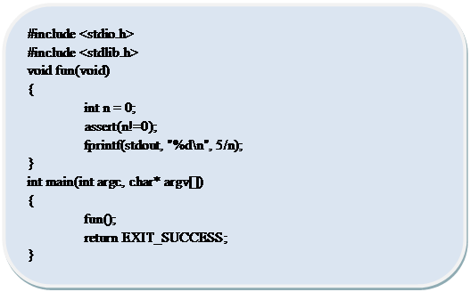运行结果：
[root@localhost ~]# gcc a.c
/tmp/cc37WP4H.o: In function `fun':
a.c:(.text+0x1b): undefined reference to `assert'
collect2:
ld 返回 1
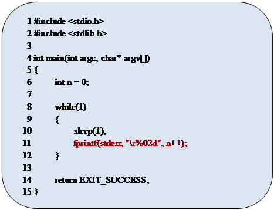例2：
五、常用命令
a. 开关机命令
1.
reboot
2.
shutdown -r now 重启
3.
init 6
4.
shutdown -h 0
5.
poweroff
关机
6.
init 3
7.
logout
8.
exit
退出登录（终端下）
b. 文件操作命令
1.pwd
功能：显示当前工作目录的绝对路径
2.ls
功能：显示文件和目录列表
语法：ls [参数列表] [文件或目录名称列表]
参数： -a 显示所有文件包括隐藏文件（文件名以.开始的文件）
-l 以长格式显示文件完整信息
-h 以适当单位显示文件大小（必须与-l配合）
-R 递归显示目录中的所有文件
-i 显示文件的i节点的值
节点：每个文件系统会对磁盘上的文件进行编号，这个号码在当前文件系统中是唯一的
【注】中括号——可选项
尖括号——必选
列表用空格分隔，不特殊说明，次序不限
【附】提示符：$PS1 用于定义shell提示符，显示内容与颜色
例：echo
$PS1
\u
: 当前用户
\h
: 当前主机
\w:
当前工作目录 # 超级用户
\$
: 提示符类型
$
普通用户
\A：24小时格式显示HH:MM
我的设置：
PS1="\[\e[36m\]\A
\[\e[32m\][\u\[\e[31m\]@\[\e[33m\]\h \[\e[32m\]\W]\
\[\e[31m\]\$\[\e[0m\]"
命令过长时用于换行
显示效果：
ls长格式显示说明：
第一列：文件权限及类型说明
文件类型
所有者权限 所属者权限 其他人权限
[ - 普通文件
d 目录
l 符号链接（软链接）
p 管道文件
c 字符设备文件——顺序读写
b 块设备文件——随机读写（意义：统一设备访问接口，除特殊设备（网卡））
s 套接字文件
文件颜色
黑色——普通文件 蓝——目录 黄——设备
浅蓝——符号链接
红——压缩文件
绿——可执行文件 红闪——丢失目标的符号链接
紫——套接字 棕——管道文件
第二列：硬连接数（一个文件有几个文件名，而它的i节点号相同）
第三、四列：文件大小（空目录大小4096）
注：设备文件表示主次设备号，设备号相同，表示使用相同的驱动程序，次设备号，表示不同的子设备
第五列：文件时间 ctime
创建时间
atime 最后访问
mtime 最后修改
注：alias ll=’ls -l’ (临时修改命令别名)
3.cd
功能：改变工作目录
语法：cd [目标目录]
示例：cd - （回到上一次所在工作目录）
4.mkdir
功能：创建目录
语法：mkdir [参数] [目录列表]
参数：-p 递归创建
5.touch
功能：修改文件时间或创建一个空文件
语法：touch [文件列表]
注：如果文件存在用来修改或目录的时间（当前系统时间），否则创建一
空的普通文件
6.rm
功能：删除文件或目录
语法：rm [参数] [文件或目录列表]
参数：
-r 删除目录时加此参数
-i 每删除一个文件或目录时提醒
-f 删除前不提醒
注：rm命令默认情况下，不提示，直接删除，所以在很多操作系统上位rm
命令起别名：alias rm=’rm -i’
7.mv
功能：文件目录移动或更目
语法：mv [参数] 源文件或目录 目标文件或目录
参数：-f 覆盖前不提醒（强制删除force）
注：目标文件或目录，存在——移动；不存在——更名
8.cp
功能：复制文件或目录
语法：cp [参数] 源文件或目录列表 目标文件或目录
参数： -r 复制目录，默认只复制文件不复制目录
-f 覆盖前不提醒
-a 不改变文件的权限和属性
注：如果文件已存在，覆盖时保持原有权限属性不变
9.ln
功能：创建链接文件
语法：ln [参数] 源文件或目录 链接文件名
参数：-s 创建软连接（符号链接）文件
注：默认情况下。ln创建硬连接文件
10.cat
功能：查看文件
语法：cat [参数] 文件名
参数： -n 显示行号
-b 空行不显示行号
-s 连续多个空行，只显示一个空行
11.more
功能：分页显示文件
用空格翻页，q退出
12.less
功能：同more
用<pageup/down>翻页，q退出
13.tail
功能：显示文件尾部内容
语法：tail [-n 行号] 文件名
14.head
功能：显示文件首部内容，使用同tail
c. 查找相关
1.find
功能：文件查找
语法：find 起始路径 -name 文件名 [-ls]
说明：基于文件名查找，[-ls]用于长格式显示查找结果
注：文件名中可以使用通配符
*可以通配任意个任意字符
？可以通配一个任意字符
2.grep
功能：基于文件内容查找
语法：grep [参数] 查找内容 起始路径或文件名
参数： -n 显示行号
-r 递归查找
-i 忽略大小写
3.updatedb与locate
功能：基于数据库进行查找
语法： 创建数据库（整个磁盘文件名数据库）
updated
查找 locate 部分或全部文件名
注：在更新数据库后的文件改变无法查找
4.which
功能：命令或命令别名查找
语法：which 命令或命令别名
d. 用户相关
1.group
功能：添加组
语法：group 组名 [-g 组ID]
注：系统会为用户和组进行编号，小于500的为系统用户或系统组，默认情
况下新添加的组和用户的ID由500开始
2.useradd 或adduser
功能：添加用户
语法：useradd [-g 组名] [-d 家目录] 用户名
参数： -g——省略
i.
先创建与用户名相同的组
ii.
创建用户并添加到此组
-d——省略 创建家目录 /home/用户名
3.userdel
功能：删除用户
语法：userdel [-d] 用户名
参数：-d 删除用户的同时删除其家目录
4.group
功能：删除组
语法：group 组名
注：必须是空组才能删除
5.passwd
功能：修改用户密码
语法：passwd [用户名]
注：不加用户名，修改当前用户密码；否则，修改指定用户密码，但仅限超级用户
6.su与exit
功能：用于切换用户
语法：切换 su [-] [目标用户]
参数： - ——不写，只切换用户不改变环境设置
省略目标用户——相当于root
 示例： su
linfeng ——$PATH (root)
示例： su
linfeng ——$PATH (root)
root
su - linfeng ——$PATH(linfeng)
返回原用户 exit
e. 文件权限相关
1.chgrp
功能：改变文件所属组
语法：chgrp 组名 文件或目录名列表 [参数]
参数：-R 递归修改
2.chown
功能：改变文件或目录的所有者和所属组
语法：chown [参数] 所有者.所属组 文件或目录列表
参数：-R
说明： 所有者 —— 只修改所有者
所有者.所属组 —— 两者都修改
.所属组 —— 只修改所属组
示例：chown -R
linfeng.embedded a.c
3.chmod
功能：改变文件权限
语法：chmod [参数] 权限表达式 文件或目录列表
参数：-R
权限表达式：
i.
八进制 r
w x
4 2 1
ii.
组合表达
|
所有者
|
u
|
+
-
=
|
r
|
|
所属组
|
g
|
w
|
|
其他人
|
r
|
x
|
|
以上三组
|
a
|
|
示例： chmod u+x test #给test文件所有者执行权限
chmod ug+rw test
附：
etc/passwd #该文件存储用户的配置信息
etc/group #该文件存储用户组配置信息
f. 磁盘管理相关
1.fdisk
功能： （1）分区管理
fdisk 磁盘设备文件名
示例：fdisk /dev/sda #对/dev/sda磁盘进行分区
（2）磁盘设备查看
fdisk -l
2.mount
功能：磁盘设备挂载
语法：mount [-t 分类类型] [-o 挂载参数列表] 设备文件名 挂载点
分区类型：
|
类型
|
用途
|
备注
|
|
vfat
|
Win下fat和fat32
|
通常可省略参数 -t
|
|
ext3
|
Linux
|
|
iso9660
|
光盘
|
|
smbfs
|
Win下网络邻居共享目录，Linux对应samba文件系统
|
|
|
nfs
|
Network file system
|
|
|
yaffs
|
嵌入式设备，可读写文件系统
|
|
|
ntfs
|
Win下ntfs
|
|
挂载参数： ro 只读
rw 读写
gid 指定挂载点组ID
uid 指定挂载点用户ID
mode=xxx 指定挂载点权限
iocharset=cp936 （字符设备乱码问题）
注：在UNIX族操作系统上，将存储设备与目录进行关联的操作称为挂载，被关联的目录称为挂载点。
3.umount
功能：卸载
语法：umount 挂载点或设备文件名
注：device a busy 的原因 —— 此设备正在使用
4.df
功能：文件系统查看
语法：df [参数] [分区设备文件名或挂载点]
参数：-h 以适当单位显示大小
示例：df -h /dev/sda1
5.du
功能：查看目录使用情况
语法：du [参数] [目录名]
参数： -s 只显示总计使用情况
-h 同上
示例：du -sh /mnt/usb
f．
系统管理
1.env
功能：查看系统环境变量
变量格式： 变量=值
常见变量：
|
HOSTNAME
|
当前主机名
|
|
SHELL
|
当前shell
|
|
HISTSIZE
|
历史命令记录数量
|
|
USER
|
当前用户名
|
|
LS_COLORS
|
指定ls显示不同文件的颜色
|
|
PATH
|
命令路径
|
|
PWD
|
当前路径
|
|
LANG
|
当前语言类型
|
|
HOME
|
家目录
|
|
LOGNAME
|
登录用户名
|
|
OLDPWD
|
上一次所在工作目录
|
2.date
功能：查看和修改系统时间
语法： （1）查看 date
（2）修改 date MMDDHHmm[[cc]YY][.SS]
月 日 时 分 年 秒
3.hwclock
功能：查看和修改rtc时钟
语法： （1）查看 hwclock
（2）修改 hwclock -s （以rtc时钟同步系统时钟）
hwclock -h （以系统时钟修改rtc时钟）
4.ifconfig
功能：IP查看与设置
语法： （1）查看 ifconfig [网卡设备名]
（2）配置 ifconfig 网卡设备名 IP地址 [netmask(子网掩码)]
注：网卡名 eth m[n]
m ——物理网卡ID
n ——虚拟网卡编号（一个网卡最多虚拟四个网卡）
g．
包管理命令
1.tar
功能：打包或解包
语法： 1）打包 tar zcvfj 包文件名 目录
参数： z gzip压缩
c 创建包（必选）
v 显示打包过程（可选）
f 打包成文件（必选）
j bizip压缩
压缩类型比较：
|
类型
|
压缩比
|
速度
|
扩展名
|
|
bizip
|
大
|
慢
|
.tar .bz2
|
|
gzip
|
小
|
快
|
.tar .gt或.tgz .
|
2）解包 tar zxvf 包文件名 [-C 目标目录]
参数： x 解包
-C 指定解包路径
3）查看包 tar ztvf 包文件名
2.rpm
功能：红帽包管理
用法： 1）安装包
rpm -ivhU --nodeps rpm包文件名
参数： -i 安装（install）
-v 显示安装过程
-h 显示安装进度
-U 若包已安装则更新
--nodeps 不检查依赖关系直接安装
2）查看系统已安装了哪些rpm包
rpm -qa
3）卸载rpm包
rpm -e 包名
4）查看已安装文件
rpm -ql 包名
技：“|”管道符
cmd1 | cmd2 —— cmd1的标准输出将为cmd2的标准输入
附：
创建以下目录结构满足学习需要
/work/
|-- C
|-- C++
|-- database
|-- embedded
|
|-- bootloader
|
|-- filesystem
|
|-- kernel
|
|-- qt
|
`-- toolchains
|-- process
|-- project
|-- qt
|-- shell
|-- signall
|-- socket
|
|-- tcp
|
| |-- client
|
| `-- server
|
`-- udp
|-- software
`-- systemcall
|-- base
|-- jpegdisplay
`-- waveplay
遇到问题根据提示解决进行分析
1）在哪里产生
2）为什么产生
3）解决方案
4）解决问题（能备份一定要备份，数据无价）
I. 进程相关
1.ps
功能：查看进程
语法：ps [参数]
参数： a 显示所有终端进程
u 显示进程详细信息
x 显示系统进程
示例：ps aux
每列意义： USER 进程拥有者
PID 进程号
注：进程号范围1~65535，每个进程加1，循环递增使用
进程ID为1的进程为init进程是系统第一个进程，又称为初始进程，是所有进程的“父”进程，在系统运行过程中其一直驻留内存
%CPU
%MEM 内存占用率
VSZ 虚拟内存大小
RSS 物理内存大小
？ 不依赖任何终端
TTY 进程所依赖的终端 ttyn 占用终端
ptsn 虚拟终端
注：在Linux中所有设备个数标号几乎都从0开始，因此tty2将表示第三个终端
S 休眠
STAT 进程运行状态—— R
运行中
START 启动时间
Z 僵尸进程
TIME 运行时间（实际占用处理器的时间）
COMMAND 启动命令
注：pstree
//进程树—以树的方式显示进程说明之间的关系
2.top
功能：动态进程查看
语法：top
命令： m 显示内存统计信息
q 退出
3.free
功能：显示内存信息
语法：free [参数]
参数： -g
-m
-k
-b
注：基本单位，默认以k为单位
4.kill
功能：给指定进程发送指定信号
语法1：查看信号列表
kill -l
|
SIGUP
|
挂起
|
|
SIGINT
|
终端中断信号
|
|
SIGAPRT
|
程序异常终止
|
|
SIGFPE
|
浮点数例外
|
|
SIGKILL
|
进程终止
|
|
SIGSEGV
|
段错误（内存非法访问，win下蓝屏）
|
语法2：为进程发送信号
kill -信号值 进程ID
注：信号——在Linux操作系统上用于实现进程间的简单通信
5.killall
功能：结束进程（基于进程启动命令）
语法：killall 进程启动命令
示例：killall httpd #daemon进程守护
注：内部实际发送的信号为SIGKILL
注：httpd网站服务器程序，IIS，apache（阿帕奇）
六、VI编辑器
a. 进入与退出
1. 进入
Vi [文件名称] [+行号]
2. 退出
:wq 保存并退出
:q 退出
:q! 不保存退出（强制退出）
:w 保存
:w
文件名 另存为
:w! 强制保存
b. 工作模式
编辑模式 ：功能等同于记事本
Ii,Aa,Oo,Ss
<ESC>
命令模式 ：对vi下达简单编辑命令（默认）
<ESC>
:或/
末行模式 ：下达文件操作命令或查找、另存为等相对复杂的操作命令
插入 I 。。。。。行首
I 插入到当前光标前
追加 A 。。。。。行尾
a 追加到当前光标后
新行 O 。。。。。。。上。。。。。
o 在当前行下新建一行
 替换 S 。。。。。。。行
替换 S 。。。。。。。行
s 替换当前字符
c．编辑命令
复制 [n]yy 复制n行，复制一行时可省略n
剪切 [n]dd 剪切n行，剪切一行时可省略n
粘贴 p 将剪切板内容粘贴到当前行下（可视情况除外）
撤销 u 撤销编辑操作
恢复 :redo 恢复已经撤销的操作
d. 光标移动
<pageUp> <pageDown>
h j k l <home>
<end>
W 下一字符首（白空格——空格、制表符、换行）
w 下一单词首（白空格，字符类型不同划分单词）
E 下一字符串尾
e 下一单词尾
gg 文件首
G 文件尾
:行号 调到第几行
e. 查找与替换
1. 完全匹配查找
1)
将光标移动到要查找的单词上
2)
按“#”
3)
大写“N”下一处
小写“n”上一处
2. 部分匹配查找
1)
/字符串
2)
大写“N”下一处
小写“n”上一处
3. 替换
:%s/原串/新串[/g] #g表示全局替换
f．分屏操作
水平分屏 :split
文件名
垂直分屏 :vs
文件名
<Ctrl+w>
. W 下一屏
<Ctrl+w>
. W 上一屏
g．可视
主要用于非整行的复制、粘贴、剪切操作
1.
将光标移动到可视的开始或结束处，按“v”
2.
通过光标移动命令将光标移动到可视的结束或开始处
3.
通过“d”剪切、“y”复制
4.
通过“p”可将剪切或复制的可视内容粘贴到光标后
f．Vi配置
行号 :set
nu
:set
nonu
语法加亮 :syntax
on
:syntax
off
去除查找内容加亮
:nohlsearch
设置水平制表符缩进 :set
ts=n #n为缩进量
永久配置
i.
修改~/.bashrc #加入vi=’vim’的别名命令
ii.
编辑vi配置脚本
~/.vimrc
七、Linux主要配置文件
作用：加载操作系统内核，负责向内核传递启动参数
种类：pc grub 嵌入式设备 vivi 小
lilo
u-boot
配置文件：
/etc/grub.conf(/boot/grub/grub.conf)
—— /etc/inittab
—— /etc/fstab
/etc/sysconfig/network
/etc/sysconfig/network-scripts/ifcfg-xxx
/etc/resolv.conf
/etc/hosts
/etc/profile #用户环境（与bash无关）
~/.bashrc #用户环境设置
/etc/bashrc #用户环境（针对bash shell）
/etc/passwd #用户设置
/etc/group #组设置
/etc/shadow #密码设置
1. /etc/grub.conf
a.
全局变量（顶格）
default=值 #用于指定默认引导的操作系统（由title次序决定其值）
timeoutout=值 #默认引导超时时间
splashimage=(hd0,0)/grub/splash.xpm.gz #背景图
#个性制作——320*480 索引图——保存xpm格式——gzip压缩
#(hd0,0)表示第一块硬盘的第一分区，相当于/boot/
Hiddenmenu #隐藏操作系统菜单选项
title #菜单项文件
password=xxxxx #MD5密码（128位）
b.
局部变量（一个制表符）
root 用于指定引导分区（内核所在分区，即/boot文件系统）
kernel /vmlinuz-2.6.18-308.el5
ro root=LABEL=/ rhgb quiet vga=791
#用于指定内核引导参数
1.内核所在文件2.以只读方式挂载根分区
3.用于指定根文件系统的位置[标签]（等同于root=/dev/hda3）
4.启动时不打印任何信息
5.用于指定终端显示模式
vga——frame buffer 模式（以内存作显存，可不用显卡）
vga设置代表开启帧缓存模式（解决找不到fb设备文件）
791——十六进制表示1024*768*16bpps（16表示十六位色，屏幕上一点，占两个字节用来放三原色，rgb565）
initrd #系统启动镜像文件
chainloader +1 #工具链
注：
注：生成MD5密码命令
[root@linfeng ~]# grub-md5-crypt
2. /etc/inittab
格式： 标号:运行级别:动作:命令
1.
自定义（2~3个字符）
2.
0~6之间，0项或多项，表示此配置项在哪个初始化级别下生效，不写表示所有级别均生效
initdefault #指定系统默认初始级别
3.
默认 sysinit #指定系统初始化脚本(系统参数、环境变量）
wait #等待该项执行完毕后，再执行其他配置项
3. /etc/fstab
格式：
设备文件名 挂载点 文件系统 挂载参数 开机是否磁盘检测
挂载次序
前四项参考mount 1——检测
0——不检查
由1~n逐次挂载。0最后挂载，
注：如果在文件中出现的存储设备，挂载时仅需指定设备文件或挂载点即可。
例如：fatab中有一行
/dev/cdrom /media iso9660 defualts 0 0
挂载此设备时，仅需执行 mount /dev/cdrom
mount /media
4. /etc/sysconfig/network
NETWORKING=yes/no #系统启动时是否开启IPV4网络支持
HOSTNAME=xx.xx.com #当前主机名称（全名）
GATEWAY=xx.xx.xx.xx #网关IP
注：网络是否启动与网关地址配置，重启网络后生效
主机名配置重启系统后生效
重启网络方法：
service network restart
Linux下服务管理命令
start
服务名 stop
（见ntsysv） status #状态
5.
etc/sysconfig/network-scripts/ifcfg-xxx(ethm[:n]/lo(回环))
DEVICE=xxx #设备名等同于（完全相同）
BOOTPROTO=static/dhcp #静态设置或动态获取
BROADCAST=xxxx #广播地址
HWADDR=xxxx #MAC地址一般不能改动（可以没有，但不能错）
IPADDR=xxxx #IP地址
NETMASK=xxxx #子网掩码
NETWORK=xxxx #网络
ONBOOT=yes/no #网卡是否随网络启动（no——禁用网卡）
我的配置文件如：
1 # Advanced Micro Devices
[AMD] 79c970 [PCnet32 LANCE]
2 DEVICE=eth0
3 #BOOTPROTO=dhcp
4 BOOTPROTO=static
5 HWADDR=00:0C:29:0D:C8:92
6 BROADCAST=192.168.11.255
7 IPADDR=192.168.11.11
8 NETMASK=255.255.255.0
9 NETWORK=192.168.11.0
10 ONBOOT=yes
11 #IPV6INIT=yes
12 #IPV6_AUTOCONF=yes
13 #GATEWAY=192.168.11.255
14 #TYPE=Ethernet
注：网卡重启配置生效
重启网卡 ifdown 网卡设备
Ifup
网卡设备
可能出现错误：错误：激活连接失败：Device not managed by
NetworkManager
解决方法：关闭NetworkManager服务
# service NetworkManager stop
为防止下次重启时，该服务重新启动而使网卡重启失败
# chkconfig NetworkManager off
6. /etc/resolv.conf
DNS客户端设置——（作用是主机名转为IP地址）
search xxxxx #没用可以删除
nameserver DNS服务器IP #（最多三个）
7. /etc/hosts
主机表文件——主要负责本机IP与主机名解析与反解析
（不添加主机表，可能导致图形界面起不来或启动缓慢）
8. /etc/profile
用户环境——所有用户均执行此文件，重新登录生效（Bash无关）
9. ~/.bashrc
用户环境设置——只针对当前用户有效，重新登录后生效
10.
/etc/bashrc
用户环境设置——针对所有用户，重新登录后生效（针对Bash shell设置）
11.
/etc/passwd
用户设置——格式
用户名：是否需要登录密码：用户ID：组ID：用户说明：家目录：用户shell
X-需要
空-不需要
注：修改后立即生效
12.
/etc/group
组设置——格式：
组名：组密码：组ID：组扩展用户列表用“，”分隔
有无无所谓
13.
/etc/shadow
密码设置——格式：
用户名：MD5密码：。。。。。。。。。。
附：
开机后进入单用户系统
1.
按“e”进入编辑模式
2.
修改内核参数，在最后加1（即可进入单用户）
<Ctrl+d> 结束单用户
取消Tab键报警声
进入/etc/inputrc
删除set bell-style none 行前面的注释符#
彻底消除报警声
修改/etc/rc.d/rc.local文件（脚本文件），在最后面加上一句rmmod pcspkr命令（目的是让系统每次在开机的时候删除pcspkr内核模块）
重启
rmmod
功能说明：删除模块。
语 法：rmmod [-as][模块名称...]
补充说明：执行rmmod指令，可删除不需要的模块。Linux操作系统的核心具有模块化的特性，应此在编译核心时，务须把全部的功能都放如核心。你可以将这些功能编译成一个个单独的模块，待有需要时再分别载入它们。
参 数：
-a 删除所有目前不需要的模块。
-s 把信息输出至syslog常驻服务，而非终端机界面。
与内核模块操作相关的命令还有
:lsmod
modinfo depmod rmmod inmod modprobe
pcspkr内核模块
八、shell编程
Shell：用于用户与内核进行交互的一段程序
分类： 1）GUI 用户图形接口
2）CUI
终端用户接口
[
ash —— 嵌入式设备（小）
[
bash —— pc机（全）
[
csh —— 网络设备（网）
1. shell脚本的构成
1） 命令
2） 变量
3） 注释（只有单行注释，以#号开始，至行尾结束）
4） 解释器说明
#!解释器路径
#!/bin/sh——符号链接，用于指定当前系统使用的默认shell
注：嵌入式系统中的应用
a)
系统的环境设置
b)
启动或配置应用
c)
设备的加载与参数设置
Shell脚本默认扩展名为.sh
echo #显示字符串、变量
参数：-n 不换行显示
2. Shell脚本的执行方法
1)
使用当前shell解释执行
语法： source 脚本文件名（可包含相对或绝对路径）
. 脚本文件名（可包含相对或绝对路径）
2)
使用指定shell解释执行
语法： shell命令 脚本文件名
示例： sh test.sh
3)
直接运行（脚本中指定shell执行）
语法： 路径/脚本文件名
示例： ./test.sh
3. 变量的分类和使用
三种形式变量：
a)
系统变量：由操作系统设置（env）
b)
预定义变量：
$? —— 上一条命令的执行结果（任何命令执行成功返回0，执行失败返回非0，而非0值一般为错误号）
$0~$9
—— shell脚本执行时的命令行参数
例：./test.sh [参数列表(空格分隔)] #实际使用$1~$9,$0代表自身
c)
自定义变量：
i.
变量无类型
ii.
无需声明
语法：
i.
赋值 变量名大写，单词下划线连接
规定： 等号两端不能有空格
值中包含空格要使用引号括起来
ii.
引用：$A
iii.
释放：unset
A B C （变量列表空格分隔）
注：
‘单引号’不支持变量，”双引号”支持变量
`反引号`用于括起来一条shell命令，当执行到包含反引号的语句时，当先执行反引号中的命令
4. 测试语句
1)
文件测试
语法：test 测试符 文件名/目录
[
测试符 文件名/目录 ]
测试符： -r 读
-w 写
-x 执行
-d 目录
-f 文件
-L 符号链接
-e 存在
2)
数值测试
语法：test 数值1 测试符 数值2
[
数值1 测试符 数值2 ]
测试符： e 等于
n 不等于
l 小于
g 大于
t、q 无意义
示例： -lt -le -nl -eq -ge
3)
字符串测试
语法1：test 串1 测试符 串2
[
串1 测试符 串2 ]
测试符： == !=
注：测试中一旦出现变量要用双引号将其括起来，否则可能出错
语法2：test
测试符 串
[ 测试符 串 ]
测试符： -n 是否非空
-z
4)
逻辑测试
-a and 与
-o or 或
!
非
5)
算数运算
语法：expr 操作数1 运算符 操作数2
运算符：+ - * /
(运算符两边加空格，乘法需要使用转义\*)
6)
特殊符号
?
* 通配符
`
` 反引号
\ 转义符
|
|
模式
|
符号
|
说明
|
|
输入重定向
|
新建
|
<
|
将符号后内容定向到符号前命令的stdin
|
|
追加
|
<<
|
|
|
输出重定向
|
新建
|
>
|
将符号前命令的stdout定向到符号后的文件
|
|
追加
|
>>
|
（不清空原有内容）
|
语法： 输入重定向 cmd
< 串
输出重定向 cmd
> 文件
注：标准错误输出，是将stderr定向到stdout然后输出(2>&1)
stdin 0
stdout 1
stderr 2
例: ls adsadas
>>test 2>&1
ls adsadsa >>/dev/null 2>&1
从命令行读取数据
语法：read 变量名
5. 流程控制
1)
分支（if）
if 测试1
then
命令1
elif
测试2
then 可重复，0~任意次
命令2
else 可选
命令3
fi
2)
分支（case）
case $变量 in
数值)
5)
模式1) #模式用于设置匹配方式 字符串) stop)
命令
正则表达式) 9[0-9])
;;
模式2)
命令
;;
模式n)
命令
;;
esac
3)
循环（while）
while 测试 #真值时循环
do
命令
done
until 测试
#假值时循环
do
命令
done
4)
循环（for）
for 变量名 in 值列表（空格分隔）
do
命令
done
6. 函数
用法：
定义： function 函数名
{
#函数体
}
调用： 函数名 参数列表
注：参数列表与命令行参数用法一样，$0~$9
函数在shell当中相当于一条命令
附：
1.
命名法：
匈牙利法：字母全小写，单词以下划线分隔
骆驼法：函数——每个单词首字母大写
变量——第二个单词开始首字母大写
2.
exit 1 #退出当前shell
3.
目录的可执行权限
表示是否可以进入这个目录，软连接文件的权限都是777
九、C开发工具
1. Gcc —— GNU（GUN
is Not Unix）
预处理 编译 组译 链接
预处理
1)
#include 头文件包含
2)
#define PI 3.14 宏替换
3)
#ifdef 条件编译
#if 0
等预处理
静态库：编译时加载，运行时无关
共享库：编译时检测，运行时加载
2.语法：
gcc [参数]
[源文件列表]
3.参数：
过程控制
Gcc 默认编译到链接阶段，生成可执行文件
-E 仅编译到预处理阶段，将预处理后的代码作为stdout
-S 进行到编译阶段，生成同名的.s汇编文件
-c 进行到组译阶段，生成同名的.o目标文件
-o 文件名 用于指定编译器输出文件时的文件名
注：编译器自带宏 __FILE__, __FUNCTION__, __LINE__
表示 当前文件 所在函数 当前行号
预处理阶段
-I路径 用于为当前预编译添加默认头文件（需要用到的头文件不在默认目录时）
例：gcc main.c -o main -I.
#包含头文件在当前目录
-include 头文件 用于指定当前预处理包含的头文件（需要调用的头文件不在该文件中时）
例：gcc main.c -include def.h
#文件中需要引用def.h头文件
-D宏名 用于向当前预处理添加宏定义
例：gcc main.c -DSUMMER #给文件一个宏参数
（宏相关见C语言）
链接阶段
-l库名 指定链接库
例：./sin -lm
#math.h头文件需要调用链接库 (见man sin)
注：C库名称规范
libxxx.so.版本号 —— 共享库
libxxx.a.版本号 —— 静态库
lib.xxx.la.版本号
前缀
库名 类型
-L路径 添加链接库默认路径
-static 使用静态链接库
-s 去除冗余 —— 如标识符（见nm）
编译阶段
-On n为0~4的整数，用于指定编译器对代码的优化级别，数值越大优化级别越高（-O0
为默认）
注：优化是编译器修改变量的存储位置与流程控制
建议：优化级别为2或3
-Wall 显示所有警告信息
建议编译参数：-Wall
-O3 -o 文件名
4.制作共享库
语法： gcc -fpic -shared
源文件列表
-o 库文件名
地址可重定位 共享库
示例： gcc
-Wall -O3 -fpic -shared *.c -o libxxx.so
使用： gcc -Wall -O3 -s main.c
-o main -L. –I.
共享库运行时不能加载解决方法：
方法1：添加到共享库默认路径为/lib/（针对于自己制作的共享库不提倡）
方法2：通过环境变量指定共享库位置
LD_LIBARAY_PATH变量末尾加上自己的“：库路径”
方法3：
a.
修改Linux配置文件/etc/ld.so.conf，在此文件中新起一行写上库路径
b.
执行命令ldconfig，更新系统共享库的hash表
5.制作静态库
1.
将要制作的静态库的源文件编译成目标文件
2.
归档（archive）
ar -r 静态库名 目标文件列表
3.
编译 略（参照共享库）
4.
运行 略
6.相关文件命令
1.
ldd ——查看可执行文件运行时所需要的共享库
用法：ldd 可执行文件名
2.
file ——查看文件类型、架构等信息
用法：file 文件名
3.
stat ——查看文件属性、权限、时间等信息
用法：stat 文件名
4.
nm ——查看可执行文件中的标识符（包括库文件）
用法：nm 可执行文件名 #strip的文件无效（gcc参数-s）
5.
strip ——去除可执行文件中的冗余信息（包括库文件）
用法：strip 可执行文件
6.
cproto ——由.c源文件生成.h头文件
用法：cproto 源文件名 #重定向到所需的.h文件中
7.编译错误
1.
错误提示中由行号、文件、函数名是编译时出错，语法错误
2.
不显示行号等信息，链接错误
8.ftp使用
1.
ftp 服务器IP或主机名 #进入ftp登录会话
2.
输入用户名、密码
匿名用户，用户名：ftp 密码：无（直接回车）
成功后进入ftp shell
操作命令：
ls 查看服务器文件列表
cd 切换在服务器中的目录
get
服务器上的文件名 下载一个文件
put
本地文件名 上传一个文件
mget
服务器上的文件名（可带通配符） 下载多个文件
mput
本地文件名（可带通配符） 上传多个文件
by
退出ftp shell
3.
保存位置为当前打开ftp的目录
9.源码文件的安装过程
1.
解包到指定目录（/usr/local/src/）
2.
进入源码目录
3.
对源码软件进行配置
配置方法：（执行配置脚本）
./configure [--help] #不加参数默认安装
注：为什么要配置？
a.
检测系统架构
b.
检查库是否满足条件
c.
检测编译器版本
d.
生成编译规则文件
4.
编译 make
5.
安装 make install
注：默认情况下，手动源码安装的库文件，在/usr/local/lib/目录下
附：编程规范
1.
多个源文件和头文件构成的项目，要为其创建一个目录，项目目录。该项目名应对应项目的可执行文件名
2.
#include < >（中间加空格）
3.
运算符两侧必须加空格，一元运算符除外。
4.
逗号后加空格。
5.
声明语句和可执行语句之间加空格
6.
return 之前加空格
7.
一条语句过长时，要分多行书写
8.
用水平制表符进行缩进，缩进要按层次，制表符宽度为4（set
ts=4）
9.
文件末尾加空行
10. 在程序编译过程中，如果找不到一些函数的声明，在主函数中进行声明时，若该函数是主函数外的文件中，通常在所声明函数前加extern
如：extern void fun（）；
11. 在函数命名时通常采用见名知意，因此在应用别人的函数或库时，有init函数名的函数中，可能会有申请内存的操作。同时会在destory/close函数名的函数中会释放。
12.
十、C语言
1.数据类型基本数据类型
主要针对内存，为了节省内存
|
整型
|
char
|
1
|
Unsigned值域0~255
|
|
Signed值域-128~127
|
|
short
|
2
|
Unsigned值域0~65535
|
|
Signed值域-32768~32767
|
|
int
|
2
|
字节数-16位系统以下
|
|
4
|
字节数-32位系统以上
|
|
long
|
4
|
以1开头的10位整数
|
|
long long
|
8
|
（4+4
= 8）
|
|
short long
|
3
|
（（2+4）\ 2 =3）
|
|
实型
|
float
|
4
|
（精度）小数点后6位
|
|
double
|
8
|
（精度）小数点后16位
|
值域范围： n = 字节数 * 8
无符号 0 ~ 2^n – 1
unsigned int
有符号 -2^(n-1) ~ 2^(n-1) – 1
int
常量表示法：
|
5
|
5L
|
5.0
|
5.0f
|
.5
|
075
|
0x123f
|
0UL
|
|
int
|
long
|
double
|
float
|
double
|
八进制int
|
十六进制int
|
0 unsigned long
|
|
2E3
|
-2E-3
|
0.8E-5
|
.8E-5
|
8E0.5
|
|
|
|
|
2*10^3
|
-2*10^-3
|
都double
|
|
‘a’
|
‘\n’
|
‘\m’
|
‘\0’
|
‘\123’
|
‘\x1234’
|
|
字符a
|
换行
|
m
|
0
|
字符的八进制表示法（转义字符开始不多于3位的八进制数）
|
字符的十六进制表示法（转义字符+x开始后不多于4位的十六进制数）
|
|
|
|
|
|
|
|
|
|
|
|
衍生数据类型
i.
数组
声明：类型
数组名 [行长度][列长度]={{…}, {…}, ….{…}}
在内存中按行存储
ii.
指针
声明：类型 *变量名
存储内存地址的变量，为了存储所有地址，所占字节数与该系统的地址总线有关。一般与int类型的字节数相同。
指针的运算：
指针与整型 p
+ n p – n
如：p + 1 —— 指向下一个元素（元素表示给指针的类型单元）
Int
*P = (int *)0x1000 0000;
P
+ 2;
所以此时P为0x1000 0008
指针与指针 p – q
指针与指针进行减法（两指针类型必须相同），只有两指针指向同一数组时，才有意义，其运算结果为两指针间有多少个元素。
iii.
枚举
enum 枚举类型 {枚举列表}
例：enum WEEK{Monday = 5， Tuesday， 。。。。}
构造数据类型
1.
结构体
i.
先定义类型
ii.
通过定义的类型声明变量
iii.
结构体取成员的运算符有两个，分别是 . 和
->
. 是通过结构体变量取成员 如：s.a;
->是通过结构体地址取成员 如：ps->a;
注：内存对齐
I．
4字节对齐
II．
如果结构体中的所有成员的数据宽度均未达到4字节，按最大成员数据宽度进行对齐。
示例：
struct std1{
int
a; //4
char
b; //1
//占空3
float
c; //4
char
d; //1
//占空3
double
e; //8
}
sizeof(std1) =
24
struct std2{
char
c; //1
//占空1
short
s; //2
};
sizeof(std2) = 4
2.
共同体
所有成员使用同一块内存
union st{
char a[2];
short b;
};
int main(int argc, char *argv[])
{
union st s;
s.b = 0x1122;
fprintf(stdout, “%x, %x\n”,
s.a[0], s.a[1]);
return EXIT_SUCCESS;
}
结果：22,11
判断当前系统是大端系统还是小端系统：
在上例基础上修改
s.b = 0x0001;
fprintf(stdout, "这是%s端系统\n",
s.a[1] ? “大” ：”小”);
3.
位段结构
struct st{
unsigned int a : 5; //5表示位数
unsigned int b : 8;
unsigned int c : 9;
unsigned int d : 1;
};
sizeof(struct st) = 4
对齐方式和结构体相同，位数不能超过前边类型的宽度
2.运算符
C语言中有42个运算符
|
赋值
|
=
|
+=
|
-=
|
/=
|
%=
|
*=
|
|
6
|
|
算术
|
+
|
-
|
*
|
/
|
%
|
++
|
--
|
7
|
|
关系
|
>
|
<
|
<=
|
=>
|
==
|
!=
|
|
6
|
|
逻辑
|
&&
|
||
|
!
|
|
|
|
|
3
|
|
|
*(取值)
|
&(取址)
|
|
|
|
|
|
2
|
|
位运算
|
&
|
|
|
^
|
~
|
<<
|
>>
|
|
5
|
|
|
&=
|
|=
|
^=
|
|
<<=
|
=>>
|
|
5
|
|
三元
|
? :
|
|
|
|
|
|
|
|
|
逗号
|
，
|
|
sizeof
|
成员
|
->
|
.
|
|
|
注：a << n 相当于 a*2^n
~1 为 -2 ~2 为 -3 ~3 为 -4
1 原码 0000 0001 取反后 1111 1110
-2原码 1000 0010 反码 1111 1101 补码 1111 1110
在计算机中负数都以补码形式存在，所以~1为-2
3.关键字
一共32个关键字
|
数据类型
|
|
void
|
char
|
int
|
float
|
double
|
|
5
|
|
|
short
|
long
|
signed
|
unsigned
|
|
|
4
|
|
|
struct
|
union
|
enum
|
typedef
|
sizeof
|
|
4
|
|
存储
|
auto
|
static
|
register
|
extern
|
const
|
volatile
|
6
|
|
流程控制
|
跳转
|
return
|
continue
|
break
|
goto
|
|
|
4
|
|
分支
|
if
|
else
|
switch
|
case
|
default
|
|
5
|
|
循环
|
for
|
do
|
while
|
|
|
|
3
|
1）typedef
为复杂声明定义简单别名
示例：
声明一下变量
a． 一个整型
b． 一个整型指针
c． 一个指向整型指针的指针
d． 十个整型数组
e． 十个整型指针数组
f． 十个整型数组的指针
g． 一个指向函数的指针，此函数有一个整型参数和一个整型返回值
h． 一个存放（f）中描述函数指针的十个元素的数组
int a; typedef int Int; Int a;
int *p; typedef int * Pint; Pint p;
int **pp; typedef int **Ppint; Ppint
pp;
int a[10]; typedef int A[10]; A a;
int *a[10]; typedef int *PA[10]; PA
a;
int (*p)[10]; typedef int (*AP)[10]; AP
a;
int (*p)(int); typedef int (*PF)(int); PF
p;
int (*p[10])(int); typedef int (*PFA[10])(int); PFA
a;
注：使用typedef起别名时，只需将定义的变量名改为别名
2）auto、register、static与extern
|
存储类型
|
存储区
|
作用域
|
生存期
|
默认值
|
|
auto(默认)
|
栈
|
声明时开始，出栈时结束
|
其作用域
|
随机值
|
|
全局
|
全局静态区
|
声明时开始，文件尾结束（可以扩展到程序的任意位置）
|
编译时开始到程序结束时
|
0（各种零）
|
|
register
|
寄存器
|
（同auto）
|
（同auto）
|
随机值
|
|
static
|
（同全局）
|
声明时开始，文件尾结束（可以在当前文件内扩展）
|
（同全局）
|
0
|
|
局部静态区
|
(同auto)
|
(同全局)
|
0
|
|
extern
|
|
（同全局或static全局）
|
（同被扩展变量）
|
|
注：
a． auto仅限局部变量（全在栈里）
b. extern 不是存储类型，主要用于扩展全局变量的作用域
例：extern
int a; //把a的作用域扩展到当前位置
extern
int a = 5; //不是声明语句（不分配内存）， 不能直接初始化
在程序编译过程中，如果找不到一些函数的声明，在主函数中进行声明时，
若该函数是主函数外的文件中，通常在所声明函数前加extern
如：extern void fun（）；
c. 寄存器变量register声明要求： 泛整型
局部变量
d. static 函数定义
如：static int
fun() { }
限定函数作用域为文件作用域
static
全局变量声明
如：static int a = 9;
限定全局变量为文件作用域，仅可在当前文件内extern
3）volatile
volatile
int a; //防止编译器对此变量优化
通常使用在：
a.
两线程通信时，对通信变量进行修饰
在线程间进行通信时，由于一方某一变量的读取频次过高，在没有volatile关键字修饰时，编译器会将该变量设为寄存器变量，从而无法实现通信
b.
串口通信中
在串口通信中，接收到的数据（串行通信）存储在一变量中，系统对该变量的连续访问，可能导致编译器优化该变量
编译器优化：
编译器会将频次访问过高的变量，自动优化为寄存器变量
栈
在C语言中— { 进栈（开始建栈）
} 出栈
（每一个大括号{}即一个栈）
通常变量在栈开始时声明，即（大括号）{后声明，不可以在执行语句后声明（C89标准）
动态申请
堆
手动释放 —— free
注：内存泄露
在函数命名时通常采用见名知意，因此在应用别人的函数或库时，有init函数名的函数中，可能会有申请内存的操作。同时会在destory/close函数名的函数中会释放。
如： void
func( )
{
int
*p;
p
= malloc(100);
。
。
。
}
该函数在开始申请了内存，应该在函数结束时，释放p
4.宏
#define 宏名 宏体
宏定义是在预编译阶段，进行单纯的宏替换
1)
宏定义时，
宏体中出现运算符，必须将宏体用括号括起来；如果是带参
宏，宏体中的宏参，必须用括号括起来。
如：#define
DIV(a, b) ((a)+(b))
2)
头文件
< > 在默认头文件目录查找
“
” 现在当前目录下查找，再到默认头文件目录下查找
3)
条件编译
#ifndef DEF_H
//如果没有定义这个宏（该头文件之前的代码中）
#define DEF_H
//定义一个DEF_H宏
#define VALUE
8
#endif //DEF_H
判断对应哪个if，防止缺省
防止头文件重复，宏名起发为当前文件名称大写
示例：
a． 定义一个宏，宏值为一年中有多少秒（忽略闰年）
#define SECONDS_PER_YEAR (60 * 60 * 24 * 365)UL
b． 定义一个宏MIN， 求两数较小值。
#define MIN(a, b) ((a) < (b) ? (a) : (b))
c． 定义一个ARRAY_SIZE，计算数组长度
#define ARRAY_SIZE(a) ((sizeof(a)) / (sizeof(a[0])))
宏定义与typedef别名的区别：
#define
PINT int*
Typedef
int * Pint;
Pint
p1, p2;
PINT
p3, p4; //p4数据类型为int，其他均为int*
5.数组
所谓数组，就是相同数据类型的元素按一定顺序排列的集合，就是把有限个类型相同的变量用一个名字命名，然后用编号区分他们的变量的集合，这个名字称为数组名，编号称为下标。
int a[4];
数组名a即数组首元素的地址，是一个常量
1）数组初始化
int a[4] = {1, 2, 3, 4};
相当于
int a[4]
= {
[0]
= 1,
[1]
= 2,
[2]
= 3,
[3]
= 4,
};
注：第二类初始化可以对特定元素进行初始化，没有顺序的要求（可以打乱先后次序）
2）数组指针与指针数组
char S[5];
内存分布表示
数组首元素地址
S
S+1
char [5] //5个char的数组
5个char的数组的地址-即数组指针 char (*p)[5]
指针数组
char *p[5]; //数组中有5个char*
指针定义符 * 左结合
3）二级指针
int
main(int argc, char *argv[])
相当于——char **argv
（参考附命令行参数）
|
|
|
地址
|
|
|
|
|
|
|
|
|
|
地址0
|
|
地址1
|
|
地址2
|
|
|
|
|
|
数据0
|
|
|
|
|
|
数据1
|
|
|
|
|
|
数据2
|
A（数据0）的存放的地址，即其指针，
它存放在*A（地址0），而存放*A的地址
，即*A指针，存放在地址argv处内容
是*(*A) 相当于 argv = **A
推广
字符数组char
a[](数据0)的存放地址，
即数组*a的地址（数组首元素的地址a）,
它存放在（地址0）处，内容*a，而存放
*a空间的地址*(*a)，存放在地址argv处
（argv =
**a 相当于 argv
= char *a[]）
4）数组操作
#include <strings.h>
a.
清零
void bzero(void
*s, size_t n); //置字节字符串前n个字节为零包含’\0’
bzero(buf,
sizeof(buf)); //清零整个数组
该函数也可用于对结构体进行初始化复位。
b.
初始化
void
*memset(void *s, int c, size_t n); //将s中的前n个字节用c代替并返回s
c.
复制（因为数组无法整体赋值，如a[5] = b[5]）
void
*memcpy(void *dest, const void *src, size_t n); //从源src所指的内存地址起始位置复制n个字节到目标dest所指的内存地址起始位置
6.结构体
结构体命名结构
struct
{
int a,
类型 b,
c;
}st;
变量名
结构体嵌套——便于内存归类
7.函数
1) strtol
功能：字符串转化成长整型
原型：long
int strtol(const char *nptr, char **endptr, int base);
nptr —— 目标字符串
endptr —— ？？
base —— 目标字符串所转的进制数
示例： char
*s = “131412312s”;
Char
*p; long n;
N
= strtol(s, &p, 10); //该字符串转化成十进制
注：strtoll 转long long
strtod 转double
strtof 转float
2）fgets
功能：（用户输入）
可以用作键盘输入：fgets（key，n，stdin）且还必须：key[strlen(key)-1]='\0'
还有种程序经常使用的方法：key[strlen(key-1)]=0x00；
与gets相比使用这个好处是：读取指定大小的数据，避免gets函数从stdin接收字符串而不检查它所复制的缓存的容积导致的缓存溢出问题
原型：char
*fgets(char *s, int size, FILE *stream)
*s: 字符型指针，指向用来存储所得数据的地址。
size: 整型数据，指明存储数据的大小。
*stream: 文件结构体指针，将要读取的文件流。
从文件结构体指针stream中读取数据，每次读取一行。读取的数据保存在buf指向的字符数组中，每次最多读取size-1个字符（第size个字符赋'\0'），如果文件中的该行，不足size个字符，则读完该行就结束。如若该行（包括最后一个换行符）的字符数超过size-1，则fgets只返回一个不完整的行，但是，缓冲区总是以NULL字符结尾，对fgets的下一次调用会继续读该行。函数成功将返回s，失败或读到文件结尾返回NULL。因此我们不能直接通过fgets的返回值来判断函数是否是出错而终止的，应该借助feof函数或者ferror函数来判断。
字符串处理<string.h>
a. strtol()—数字字符串转转换成（二、八、十进制）
原型：long int strtol(const char*
nptr, char** endptr, int base);
功能：将字符串中的数字转成base进制数（以数字开头的字符串）
返回值：
b. atoi
原型：
注：在VC中可以是用itoa()函数，进行进制转换
如：
char
buf[50];
itoa(10, buf, 2); //将数字10转换成二（2）进制后，存到buf字符数组中成字符串
c. strcat()
d. strstr()
e. strtok()——分割字符串
f. strrchr()
8.异常处理
1）段错误——野指针
野指针——只声明，没有初始化
如：
{
struct
sDateTime *pDT;
pDT->time.second
= 14;
}
此时，pDT为野指针，它指向内存中的任意一段内存空间，而该段内存可能对该指针没有访问权限或没有所指向的内容，而导致非法访问。
段错误在windows下容易导致蓝屏
正确使用：
{
struct sDateTime dt;
struct
sDateTime *pDT = &dt;
pDT->time.second
= 14;
}
注：在程序中声明一个变量，就是在内存中开辟一段内存空间（大小视变量类型而定）；而声明一个指针则是给定一个内存地址，而只有当一段空间与一个地址“绑定”的时时候（也就是取址、赋值），该指针才有意义
9.进程
(创建进程) —— 复制所有数据
 内存中
内存中
 a只有一个 （共享代码）
a只有一个 （共享代码）
父进程
子进程
a有两个
无论任何进程，父子进程数据是私有的，代码是共享的
10.线程
函数调用
修改a值 读取a值 （线程间数据共享——通信）
优点： a. 数据共享
b．代码共享
c．多核处理器可使不同线程在不同处理器上
速度快，安全性低
附：
1. C语言中零的表示：
|
0
|
.0
|
|
0L
|
.0F
|
|
0UL
|
‘\0’
|
|
0U
|
NULL == ((void *) 0 )
|
注：字符串末尾有一个’\0’, 代表该字符串结束
字符串数据类型 “abc”
为 const
char *
2. 命令行参数
int
main(int argc, char *argv[])
命令行参数个数含命令本身 列表
如：./waveplayer
xp.wav xp1.wav
argc = 3 argv[0]
argv[1] argv[2]
(参考二级指针)
示例：rgb24 —— rgb565
Rgb565
R （r & 0xF8）<< 8
G
(g & 0xFC) << 3
B
(b >> 3)
Rgb565
= ( (r & 0xF8) .<< 8) | ((g & 0xFC) << 3) | ( b
>> 3);
#include <stdio.h>
#include <stdlib.h>
#include <stdint.h>
int main(int argc, char *argv[])
{
uint8_t r = 0xFF;
uint8_t g = 0xCC;
uint8_t b = 0x99;
uint16_t rgb = 0;
rgb = ((r &
0xF8) << 8) |
((g & 0xFC) << 3) |
(b >> 3);
fprintf(stdout,
"%4X\n", rgb);
return
EXIT_SUCCESS;
}
#include <stdio.h>
#include <stdlib.h>
#include <stdint.h>
typedef union{
uint16_t rgb;
struct
{
uint16_t
b : 5;
uint16_t
g : 6;
uint16_t
r : 5;
}colors;
}Color;
int main(int argc, char *argv[])
{
uint8_t
r = 0xFF;
uint8_t
g = 0xCC;
uint8_t
b = 0x99;
Color
color;
color.colors.r
= r >> 3;
color.colors.g
= g >> 2;
color.colors.b
= b >> 3;
fprintf(stdout,
"%04X\n", color.rgb);
return
EXIT_SUCCESS;
}
十一、MAKE工具
1.编译规则文件
GUNMakefile 高
规则文件 makefile 优先级
Makefile（一般） 低
一般编写使用Makefile命名，其他两个多用于在一个项目中存在检测
目标 ：[依赖列表]
tab 命令
。 多行或
。 0行
。
|
|
2.规则文件由规则构成
语法：
规则：
i.
先递归、 后迭代
（检测依赖关系）（根据目标与依赖的时间关系，决定是否重新执行规则里的命令）
ii.
在规则文件中，第一个目标为默认目标，如果在下达make命令时，不指定目标，那就使用默认目标，为递归结点。
也可以在make时，指定一个目标
iii.
没有依赖的目标为伪目标，最好在此目标之上先做说明。
如：PHONY：clean
clean：
rm
–f circle.o area.o main.o
3.变量
I．
自定义变量
赋值：变量名=值列表（空格分隔） #多行加转义符
引用：$(变量名)
注：
= 引用时才展开变量值
:= 赋值时直接展开变量（替换后不变）
+= 连接形成列表
?= 如果原来变量没有赋值时，才有效
II．
预定义变量
|
$@
|
本条规则的目标
|
|
|
$^
|
本条规则所有依赖
|
|
|
$<
|
本条规则第一个依赖
|
|
|
CC
|
默认的C编译器
|
|
|
CFLANGS
|
指定编译阶段的参数
|
|
III．
Make的推断
推断简单的编译命令
多目标生成时，可将多个目标作为依赖关系，重新设定一个目标
a． qmake -project #使用QT自带工具生成一个round.pro项目文件
b. qmake #通过xxx.pro项目文件生成Makefile编译规则文件
c. vi Makefile文件，对其根据需要修改 编译参数
d. make #编译 指定编译器
头文件指定
库名指定
示例：round
SRC=area.o \
circle.o \
volume.o
CC=gcc
CFLAGS=-Wall -O3 -I.
AR= ar
LDLAGS=-lm //自定义变量
all : libround.so libround.a round
libround.so : $(SRC)
$(CC)
-fpic -shared -o $@ $(SRC)
libround.a : $(SRC)
$(AR)
-r $@ $(SRC)
round : $(SRC) main.o
$(CC)
$^ -o $@ $(LDLAGS)
area.o : area.c
circle.o : circle.c
volume.o : volume.c
main.o : main.c round.h
.PHONY : clean
clean :
rm -f
$(SRC) main.o
十二、设备驱动调用
1. 预备知识
在Linux中一切皆文件，而设备文件是为了统一设备访问接口
User
space （用户模式）
虚拟文件系统
Kernel
space （内核模式）
驱动
设备
Hardware
platform[硬件平台]
注：buffer
缓冲区，大小为8192bytes=8kb
在程序运行中缓冲区满或遇到换行字符或程序结束时，才向标准输出设备上输出内容。
文件的使用
系统调用
文件描述符（int） 识别内核访问的设备文件
标准C库 文件指针（FILE*）
文件描述符范围0~65535，每打开一个文件，文件描述符的值尽可能保持最小值。
stdin
0
系统开启后，三个文件默认打开 stdout 1
stderr 2
2. 函数
a. write
<unistd.h>
ssize_t write(int fd, const
void *buf, size_t count)
功能：指针buf地址开始，将连续个count个字节，写入到fd文件描述符所对应的文件中。
返回值： >0 实际写入的字节数
0
未写入数据
-1 失败
出错：设置errno
注：
size_t
unsigned int 表示大小、数量、无符号
ssize_t
signed int 表示大小、数量、符号
void
* 无类型指针，可以指向任意类型的内存地址
const
void * 常数据指针，不能通过该指针修改它所指的数据
b. close
<unisstd.h>
int close(int fd)
功能：关闭文件描述符为fd的文件
返回值：成功 0； 失败 -1
出错：设置errno
注：
程序中一般不对close进行出错处理
只针对进程关闭文件，如果一进程与其克隆进程，同时使用一个文件；其中一进程通过close关闭该文件，另一进程还能正常使用。
出错处理
1. <errno.h>
errno //错误号
<string.h>
char
*strerror(int no) 根据错误号取出出错信息
2. <stdio.h>
perror(“write”); 在write后加上冒号和出错信息，然后输出到stderr
注：在if条件判断时，出现==和常数时，常数一般写==左边，防止将关系运算符写成赋值运算时，不报错
在编码时，通常使用
return –errno; //好处？
c. read
<unisstd.h>
ssize_t read(int fd, void *buf,
size_t count)
功能：从fd代表的文件中，读取count个字节的数据，存入buf地址中。
返回值： >0 实际读到的字节数
0
读到任何数据
-1 失败
出错：同write
注：
string.h头文件包含了strings.h
BUFSIZ是个宏，定义于stdio.h中，其值为系统缓冲区大小（8192byts=8kb）
d. open
<sys/types.h>
<sys/stat.h>
<fcntl.h>
int open(const char *name, int flags) //打开已存在文件
int open(const char *name, int flags, mode_t mode) //不存在时新建并打开
功能：以flags指定方式打开一个name指定文件
返回值：成功——返回文件描述符
失败——-1
出错：同write
打开方式flags：
|
O_RDONLY
|
只读
|
O_WRONLY
|
只写
|
|
O_RDWR
|
读写
|
O_CREAT
|
创建
|
|
O_SYNC
|
同步
|
O_TRUNC
|
若存在则清空
|
|
O_APEND
|
追加模式打开，文件打开后文件指针指向文件尾（其他默认都在文件首，多次写时将覆盖之前文件内容）
|
多个参数时，使用按位或链接。如：
O_RDWR | O_CREAT
如果flags中包含了O_CREAT，则必须使用三参的open函数
mode：用于指定文件权限、属性等。(见附文件掩码)
如：
S_IRUSR |
S_IRGRUP | S_IROTH
Open(FILENAME,
O_WRONLY | O_TRUNC, 0644) // 八进制权限表示
e. ioctl
<sys/ioctl.h>
int ioctl(int df, int cmd,
…)
（命令或请求） 无 （cmd命令没有参数）
驱动程序头文件 地址（根据cmd参数决定）
/usr/include/linux/*.h
#include
<linux/xxx.h>
统一的设备控制接口（UNIX统一规定）
同类设备驱动兼容上层控制接口
示例：将通道数设为2
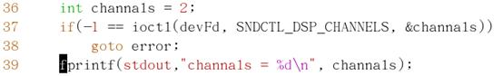
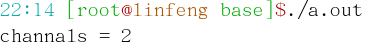
声卡设备使用：
i.
复位
ii.
设置声道、采样率、位数等。。。
注：幻数
—— 主要用于控制（ctl）命令。
1)
数据方向 无
写（ 驱动）W
读（ 驱动）R
2)
设备编号（在幻数列表文件）
3)
命令值
4)
数据宽度
示例：
#define
SNDCTL_DSP_CHANNELS _SIOWR('P', 6, int)
f. lseek
功能：改变文件读/写偏移量
<sys/types.h>
<unistd.h>
原型：off_t lseek(int fd, off_t offset, int
whence)
SEEK_SET 文件开始
whence SEEK_CUR 当前位置
SEEK_END 文件末尾
返回值：函数调用后的文件指针偏移量（以字节为单位）
-1
代表失败
例：lseek( fd, -100, SEEK_CUR)
g. mmap —— 内存映射
功能：将文件映射到内存（相当于数组）
<sys/mman.h>
原型：
void *mmap (void* start, size_t length, int prot, int flags, int fd,
off_t offset)
start——用于指定映射地址，NULL代表由系统决定映射地址
length——想要映射的长度（单位字节）
PROT_READ 只读
prot——映射权限 PROT_WRINT 只写
PROT_READ
| PROT_WRINT 读写
flags——映射模式 MAP_SHARE 共享（内存改—文件变）
MAP_PRIVATE 私有（内存改—文件不变）
fd——文件描述符
Offset——映射的文件偏移（相对于文件首的偏移量），必须为分页大小的整数倍 n*getpagesize() //获取系统分页大小
返回值：成功——返回映射地址
失败——(void*)-1
如：if((void*)-1 == ptr)
h. munmap —— 解除映射
原型：int munmap(void *p, size_t length) //参数与mmap对应
返回值：
成功 0
失败 -1
示例：播放wav音频文件
目的：将未经过压缩的wav音频文件，通过文件操作播放
内存
malloc或数组 open
只写
WAV文件 声卡设备文件
open 只读
过程化：
1.
打开wav文件
2.
打开声卡设备文件（/dev/audio）
3.
从wav文件中的数据读到内存中
4.
将内存中的数据写到声卡设备文件 循环直至wav文件读取完毕
5.
关闭声卡设备文件
6.
关闭wav文件
实现1：
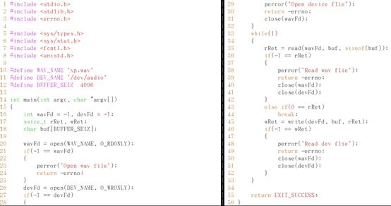
如何只提取结构体中的成员
方法一：直接使用read将文件头部分读入结构体所在内存
方法二：
1. 数组的内存赋值给结构体的内存，使用memcpy()
2. 只循环一次，结束循环
虽然可以读取，但在此处不可行
模块化（程序复用）
1.初始化音频文件
a．打开音频文件
b．读取音频参数
c．检查文件合法性
2.初始化音频设备
2．a．打开音频设备
2.5．b．设置工作参数
3.读取音频文件数据
4.写音频数据——声卡
5.关闭音频设备
6.关闭音频文件
分类：
音频文件相关：1， 3，
6 （wav.c）
音频设备相关：2， 2.5， 4， 5 （soundcard.h）
wav.c
|
序号
|
函数名
|
所需参数（结构体）
|
返回值
|
|
1
|
initWaveDecoder
|
文件名
|
采、声、位、文件描述符
|
错误号（返回值int）
|
|
3
|
getWaveDate
|
文件描述符、大小、存放位置，偏移量、实际数据长度
|
错误号（返回值int）
|
|
6
|
closeWaveFile
|
文件描述符
|
错误号（返回值int）
|
|
|
|
|
|
soundcard.c
|
序号
|
函数名
|
所需参数（结构体）
|
返回值
|
|
2
|
OpenSndDevice
|
设备名
|
文件描述符
|
错误号（返回值int）
|
|
2.5
|
setSndDevice
|
文件描述符、采、声、位
|
错误号（返回值int）
|
|
4
|
writeSndDevice
|
文件描述符、存放位置（地址）、实际长度、
|
错误号（返回值int）
|
|
5
|
closeSndDevice
|
文件描述符
|
错误号（返回值int）
|
|
|
|
|
|
注：对固定不变的参数，在函数形参定义时，通常使用const修饰
错误处理
/sndDevice.c
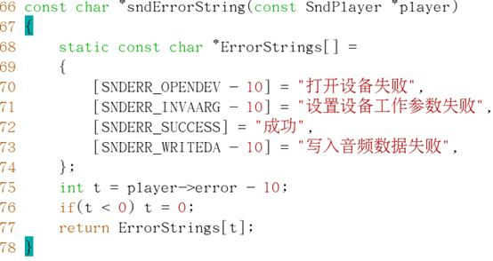
附：
1. man
man
[级别] 内容
分级：
1 shell命令
2 系统调用函数（与内核直接通信）
3 C库函数
4 设备
5 配置文件
6 游戏
7 协议（设备相关）
8 网络相关协议
位置：/usr/share/man/man[1-8]
2. 文件掩码
限制系统文件权限,在初始情况下，文件权限666目录权限777，系统通过文件掩码进行默认权限的限制
默认文件权限获取：
iii.
文件必须去除可执行权限
iv.
再用这个权限与掩码按位取反后的值进行与操作
查看系统文件掩码
命令：umask
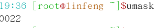
0022（八进制） 000 010 010
取反
111 101 101
文件权限
110 110 110 ‘与’ （初始权限）
110
100 100 —— _rw__r__r__ (创建文件的默认权限)
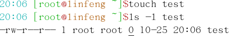
3. 宏定义或关键字加亮
部分关键字不亮解决方法
在/usr/share/vim/vim70/syntax/c.vim中查找相似的预定义变量，将该变量添加在后面。
十三、进程编程
1. system()
<stdlib.h>
原型：int
system(const char *cmd)
返回值：cmd运行的结果
2. exec族
用处：进程替换
man 3 exec
原型：int
execl(const char *path, const char *arg, …);
功能：启动一个进程
path ——
命令路径，该进程替换当前正在运行的进程，如#define
PATH “/bin/ls”
arg ——
命令参数列表，相当于命令行输入的内容
注：参数列表中最后一个参数为必须为NULL（哨兵）
3. fork()
<sys/types.h>
<unistd.h>
原型：pid_t
fork(void);
功能：创建一个子进程
参数：无
返回值：失败
-1
成功 父进程返回子进程ID
子进程返回0
附:
pid_t getpid(void); //获取当前进程ID
pid_t
getppid(void); //获取当前父进程ID
僵尸进程：只占用ID，不占用内存和处理器资源
Fork创建的父子进程，父进程先于子进程结束，子进程就会被INIT进程托管，（进程号将变为1）此时这个进程称为“守护进程”；反之子进程先于父进程结束，子进程会等待父进程退出，而一同退出。此时的子进程不占用任何处理器和内存资源，仅占用一个进程ID，这时子进程被称为僵尸进程。
4. kill() ——信号生成（进程间通信）
<signal.h>
原型：int
kill(pid_t pid, int sig);
返回值：失败
-1 成功
0
注：fork创建的父子进程间通信
守护进程设置：
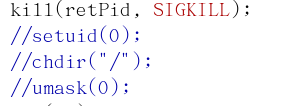
setuid(0);
//使当前进程脱离用户会话期
chdir(“/”);
//改变当前进程工作路径为根
umask(0); //改变文件掩码值为0000
5. signal() ——信号捕获（进程间通信）
<signal.h>
typedef
void (* sighandler_t) (int); //函数指针
原型：sighandler_t
signal(int signum, sighandler_t handler);
signum——信号值
handler——信号处理函数
功能：捕获信号，此函数调用后，当前进程再次收到signum信号时，将暂停当前代码，自动调用handler指向的函数，当handler指向的函数运行完毕后，返回暂停处继续向下执行。
注：不是所有信号都可以被捕获，如：SIGKILL信号不能被捕获
返回值：为与信号原来关联的函数指针
附：
a.
调用的目的：当该进程收到signum指定的信号时，自动调用handler指定函数
b.
每个进程对一些信号都有默认的处理函数

defaultprocessInit
funInit
signal(SIGINT, p);
信号表
pSIGINT
|
|
defaultprocessInit
funInit
p=signal(SIGINT, funInit);
|
|
defaultprocessInit
信号表
pSIGINT
|
|
A 进程启动 B调用signal C
再次调用signal
SIG_DEF
—— 系统默认处理函数
SIG_IGN
—— 忽略信号
6. alarm()
<unistd.h>
原型：unsigned
int alarm(unsigned int seconds);
功能：在seconds后向当前进程发送一个SIGALRM信号
6.1 pause()
原型：int pause(void)
功能：暂停函数，以阻塞方式暂停当前进程
阻塞方式——使该进程占用很少的处理器资源
7. setitimer()
<sys/time.h>
原型：int
setitimer(int which, const struct itimerval *value, struct itimerval *oldvalue)
参数：
which
ITIMER_REAL //系统提供，只要处理器工作，定时器就有效，产生SIGALRM信号
ITIMER_VIRTUAL //进程中虚拟的，只要进程运行时才有效，产生SIGVTALRM信号
value——设置定时参数
struct
itimerval{
struct timeval it_interval; //间隔时长
struct timeval it_value; //启动时长
};
注：it_interval、it_value二者中有一项为0时，停止定时器工作
i——
间隔（interval） t ——
时间（time）
oldvalue——向调用处返回原来的定时器参数，如果不需要，调用时写NULL
struct
timeval{
long tv_sec; //秒
long tv_usec; //微秒
};
例如：
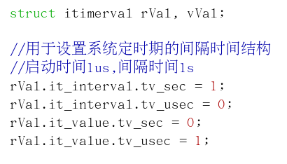
十四、管道
1. popen() / pclose() —— 基于命令
<stdio.h>
原型：FILE*
popen(const char *cmd, const char *type);
功能：执行命令cmd，并与此命令启动的进程间创建一个管道，根据type确定管道与命令间的数据方向。
|
type
|
当前进程
|
数据方向
|
cmd进程
|
|
“r”
|
FILE*
|
fread
|
stdout
|
|
“w”
|
FILE*
|
fwrite
|
stdin
|
附：
size_t
fread(void *ptr, size_t size, size_t nmemb, FILE* stream);
实际读的次数
读次数 每次都大小
如：
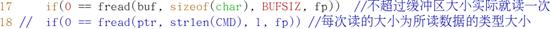
2. pipe() —— 父子进程间通信
<unistd.h>
原型：int
pipe(int filedes[2]);
注：函数形参中出现数组形式的写法时，实际上形参的数据类型不是数组，而是指针，之所以写为数组形式，是为了告知函数调用者，这段内存至少需要多大，如：int pipe(int filedes[2]);
//filedes数据类型为int*，而且filedes指针要保证其指向2*sizeof(int)这么大的可读写内存空间。
3. fifo ——
命名管道
open open
只读 只写
a. 创建管道文件
原型：int mkfifo(const *pathname, mode_t mode);
参数：mode——权限
注：仅创建，打开使用open()
b. 删除管道文件
原型：int unlink(const *pathname);
返回值： 成功 0
失败 错误号
注：(1) 管道读写要同时打开
(2)
如果写端关闭，读端将不再阻塞
十五、套接字
封装信息
注：网络中的数据按大端模式传送
至少封装一半信息即可通信（前半部分或后半部分）
TCP通信——C/S架构
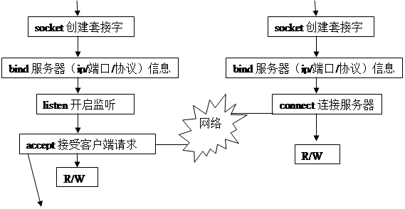
服务器IP 0.0.0.0
监听端口 1234
（监听的套接字接受客户端连接）
Accept请求客户端连接创建新的套接字
再随机分配一个端口
|
|
创建新套接字文件（用于客户端通信）
 服务器
客户端
服务器
客户端
连接
数据通信
附：
TCP——流式通信（分片传输）
UDP——数据报
常见端口
|
|
端口号
|
|
https://
|
443
|
|
http://
|
80
|
|
ftp://
|
21
|
|
mail://
|
25(发)/110（收）
|
1、socket()
<sys/types.h>
<sys/socket.h>
原型：int
socket(int domain, int type, int protocol);
功能：创建套接字文件
参数：domain——用于指定通信域 PF_UNIX/PF_LOCAL
—本机通信
PF_INET
—— 远程
type——通信类型： SOCK_STREAM — 流式（TCP）
SOCK_DGRAM — 数据报（UDP）
protocal——协议 0
返回值：成功——返回套接字文件描述符
失败——-1
注：所创建的套接字文件在VFS内核中（虚拟）
2、bind()
<sys/types.h>
<sys/socket.h>
原型：int
bind(int sockFd, const struct sockaddr *srvAddr, socklen_t addrLen);
功能：绑定
参数：sockFd
—— 套接字文件描述符
addrLen——sizeof(struct
sockaddr)
srvAddr—a. struct
sockaddr结构不能直接使用，要使用struct sockaddr_in
结构替代之。
sin_family 域
AF_UNIX/AF_LOCAL
AF_INET
b. struct sockaddr_in sin_port 端口号（按大端存储的端口号）
成员
sin_addr.s_addr IP地址（按大端存储）
struct
in_addr 数据类型
返回值：成功 0 失败 -1
注：使用struct sockaddr 结构体之前必须先清零
端口号、IP地址转换（大端存储）
h——host
n——network
short——端口
long——IP地址
如：ntohl() IP地址网络转主机
<arpa/inet.h>
unist32_t
htonl(uint32_t hostlong);
uint16_t
htons(uint16_t hostshort);
uint32_t
htohl(uint32_t netlong);
uint16_t
ntohs(uint16_t netshort);
以上函数主要是将我们输入的ip、端口号，转换成计算机存储的大端模式，或将存储的大端模式转换我们平时的典型IP
输入点分制IP的转换
<sys/socket.h>
<netinet/in.h>
<arpa/inet.h>
char*
inet_ntoa(struct in_addr in); //sin_addr.s_addr转为点分制IP
in_addr_t
inet_addr(const char* cp); //点分制IP转struct
in_addr
返回值：INADDR（0）——ip相当于0.0.0.0
INADDR_NONE（-1）——ip相当于255.255.255.255
注：sin_addr.s_addr、in_addr_t 的数据类型为struct in_addr
3、listen()
原型：int listen(int sockFd, int
backlog);
功能：创建监听
参数：sockFd——文件描述符
Backlog——等待队列最大长度
返回值：成功 0 失败 -1
示例：创建TCP监听函数结构体
typedef struct{
char
ipAddr[17]; //ip地址
#define LOCAL_SOCKT PF_UNIX
#define REMOT_SOCKT PE_INET
char
domain; //域使用上面两个宏定义
uint16_t
port; //端口
int
sockFd;
int
backlog;
}IpInfo;
4、connect()
原型：int connect(int sockFd, const
struct sockaddr* srvAddr,
socklen_t addrLen);
功能：客户端连接到服务器
参数：同bind
返回值：成功——0
失败—— -1
5、accept()
原型：int accept(int sockFd, struct
sockaddr* addr, socklen_t sockLen);
功能：接受客户端连接
参数：addr——向服务器返回客户端IP信息
sockLen——向服务器返回客户端IP信息结构的长度
返回值：成功——服务器上用于与客户端通信的套接字文件描述符
失败——-1
注：addr的使用：被清零的struct sockaddr结构体的内存地址
sockLen使用：被设置为sizeof(struct sockaddr)大小的socklen_t变量的内存
如果不想获取客户端的IP（信息）、port时， addr可传NULL
示例：
struct sockaddr_in ipAddr；
socklen_t sockLen;
sockLen = sizeof(ipAddr);
bzero(&ipAddr, sockLen);
6、通过TCP的S/C数据传输
目的：在客户端输入shell命令，传到服务器上执行，并将执行后的结果传回到客户端显示
二者之间数据传输需要自定义协议
字节数
2
2 n
大小——数据长度
类型——命令还是返回数据
‘P’——请求提示符
‘p’——返回提示符
‘C’——请求执行命令
‘c’——返回命令结果
自定义协议结构：
typedef struct{
uint16_t
type;
uint16_t
dataLength;
uint16_t
maxLength;
char
*data;
}Data;
a. 基本流程
server
client
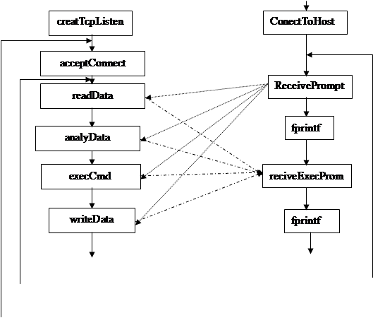
F
F
T
T
b. TCP服务器模型
i.循环TCP服务器模型
F
T
特点：消耗资源、编程简单、循环服务器在同一时刻只能响应一个客户端的请求。
用途：用于客户端处理速度快，不需要并发处理的
示例代码：/work/socket/tcp/tcp1
ii.多进程TCP服务器模型
pid=0(子)
 pid=1
pid=1
F
T
特点：并发处理，消耗资源较大（数据私有），启动速度低；多客户端数据私有，保证了数据安全
示例代码：/work/socket/tcp/tcp2
Select—同时监听多个文件描述符的可读、可写、异常等状态，此函数调用后，被其监听的描述符无响应时阻塞，一旦多个文件描述符之一响应时，阻塞结束
优点：占用资源少，响应速度快
缺点：多客户端数据共享，安全性低
问题：
关联多个描述符
判断哪个描述符响应（测试（FD_ISSET）是否与句柄关联）
select使用
注：多个客户端，多个客户端信息（即IpInfo结构），采用结构体指针数组存储。而数组的下标与客户端文件描述符关联
示例代码：/work/socket/tcp/tcp3.1
c. 设置
i.守护进程——服务器
后台运行的程序，可做守护进程
流程：
1）umask();
2）chdir();
3）setuid();
4）close all file
详见进程
示例：
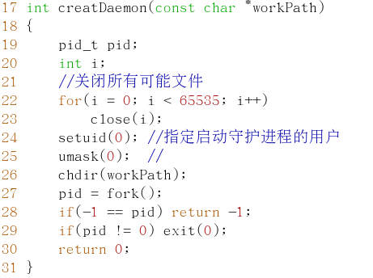
ii.日志文件
[时间 IP 端口 状态]
iii．配置文件
工作目录：root=/work
日志文件：logfile=/var/log/rmshell.log
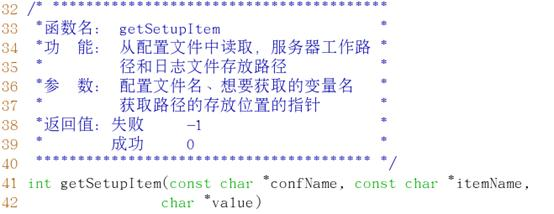
d. shoutdown()函数
原型：int shoutdown(int s, int how);
功能：关闭部分全双通连接
参数：s——套接字文件描述符
how——SHUT_RD
读
SHUT_WR
写
SHUT_RDWR
读写
注：shoutdown与close区别：
shoutdown(s, SHUT_RDWR); //针对套接字的设备（该套接字设备在以后不用是时，可用shoutdown关闭）
close(s);
//关闭针对当前进程
e. select()
数据类型——fd_set //监听句柄
声明：fd_set rfds //变量
使用：&rfds //指针
1）void FD_SET(int fd, fd_set *set); //关联文件描述符（一次关联一个）
2）void FD_ZERO(fd_set *set); //消除句柄中的所有描述符
3）int FD_ISSET(int fd, fd_set *set); //测试该描述符是否响应
返回值：0——没关联 1——关联
原型：int select(int nfds, fd_set *rfds, fd_set *wfds, fd_set *efds,
struct timeval *timeout);
功能：监听多个文件描述符的状态
参数：nfds——所监听的文件描述符最大值加1
rfds——读状态监听
wfds——写状态监听
efds——异常监听
timeout——超时
注：读、写、异常至少选一个监听，不需要调用可传NULL，不设置超时时间也可传NULL
返回值：失败——-1 （该设备没有监听机制）
成功——1
超时——0
注：listen与select函数的区别：
listen针对tcp服务器，对网络端口进行监听，用于在监听端口提供服务。
select监听用于对文件描述符的可读、可写、异常等状态的侦测，它不仅仅局限于套接字文件描述符，而是所有文件描述符，只要对应的设备文件支持阻塞，即可使用此函数进行监听。select函数调用后，程序进入阻塞状态，直到设备监听状态响应时，才退出select函数调用。
7、UDP通信
a. 基本流程
只有接受数据时才需要绑定bind
b. 使用函数
1）sendto()
原型：ssize_t sendto(int s, const
void *buf, size_t len, int flags,
const struct sockaddr *addr, socklen_t addrLen);
功能：发送数据——相当于write() + connect() 合体
2）recvfrom()
原型：ssize_t recvfrom(int s, void
*buf, size_t len, int flags,
struct sockaddr *addr, socklen_t addrLen);
功能：接收数据——相当于read() + conect() 合体
3) setsockopt()
原型：int setsockopt(int s, int
level, int optname, void *optval, socklen_t *optLen)
功能：设置套接字参数
参数：s——文件描述符
|
参数
|
level
|
optname
|
optval
|
optLen
|
|
|
SOL_SOCKET
|
SO_BROADCASE（是否允许广播）
|
int
|
0或1
|
|
SO_DONTRDUTE（不查找路由）
|
int
|
0或1
|
|
SO_RECVBUF（接受缓冲区大小）
|
int
|
|
|
SO_SNDBUF（发送缓冲区大小）
|
int
|
|
|
SO_ERCVTIMED（接受超时时间）
|
struct
timeval
|
|
|
SO_SNDTIMED（发送超时时间）
|
struct
timeval
|
|
|
IPPROTO_IP
|
IP_TTL
（生存时间）
|
int
|
|
|
IPPROTO_TCP
|
TCP_MAXSEG（TCP最大数据段大小,切片大小）
|
int
|
|
如：
int
t = 1;
setsockopt(s,
SOL_SOCKET, SO_BROADCASE, &t, sizeof(t));
4）ioctl()——查看当前缓冲区的可用大小
参考十二ioctl()函数
参数：cmd——FIONRED
arg——int*
示例：size_t n;
int
sockFd;
ioctl(sockFd,
FIONRED, &n);
fprintf(stdout,
“%d bytes ready read\n”, n);
buf
= (char *)malloc(n);
read(sockFd,
buf, n);
c. 示例——tty下局域网聊天
流程
子

父
示例代码：/work/socket/udp/udpchat.c
附：
查看状态
netstat –an | grep 80
#查看本机http服务是否开启
规范
编写程序将最先进行错误判断，将可能最容易出错（或出现的这个错误会使一些代码的运行失去意义）的应先编写，进行错误处理
出错处理
使用switch—case 可进行错误判断处理，使用户自定义错误信息
switch(ret)
{
case TCPERR_INVADDR:
fprintf(stderr, "Invalid ip addr.");
break;
case TCPERR_LISTEN；
}
代码格式化
indent xxxx.c //格式化C代码后，会备份源码
获取当前的系统时间
函数：time();
gmtime();
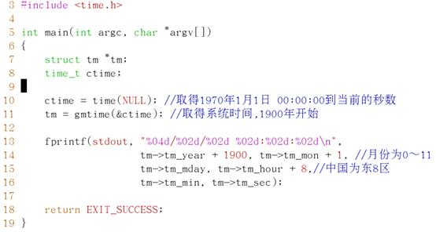
IP地址分类（A、B、C）即广播地址
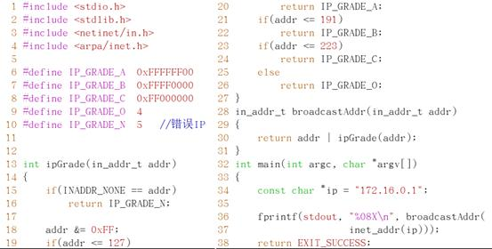
十六、数据库
常用数据库：mysql（C/S架构，网络端口3306）
sqlite——通讯录（基于文件[只能进行本地的数据读写]）
（头、库）开发包
Mysql——API sever—数据服务
client—客户端shell
1. 开启/停用
start
service mysqld stop
restart
2. 进入mysql shell
mysql [-h 主机名或IP] [-u 用户名] [-p[密码]] [数据库名]
如：mysql
–h 192.168.1.2 –u linfeng –p
注：MySQL默认数据库和用户新建数据库放在，/var/lib/mysql下
3. 密码忘记或丢失
密码忘记或丢失可进行数据库重置的方式，重新登入数据库
a.
停止mysqld服务
b.
rm –rf
/var/lib/mysql/mysql #删除用户信息所在数据库mysql
c.
重新开启mysqld服务
4. 常用的MySQL操作
1）显示当前所有数据库
show databases;
2）进入数据库test1
use test1;
3) 删除数据库test2
drop
database test2;
4) 显示当前库下的表
show table;
5. 用户管理——mysql.user表
a. 通过mysql.user表
字段：user host password
用户的增、删、改可以对mysql.user表的相应操作来完成。
如：修改所有用户密码
update user set password=password(‘123456’);
密码通过password函数crypt方式加密成一个字符串（老版本16位，新版本41位）
查看密码的加密长度：
select length(password('123456')) from user; //长度均为16
加密：
ENCRYPT(，)：使用UNIX crypt()系统加密字符串，ENCRYPT()函数接收要加密的字符串和（可选的）用于加密过程的salt（一个可以唯一确定口令的字符串，就像钥匙一样），注意，windows上不支持
DECODE(,)：加密解密字符串。该函数有两个参数：被加密或解密的字符串和作为加密或解密基础的密钥。Encode结果是一个二进制字符串，以BLOB类型存储。加密成都相对比较弱
MD5()：计算字符串的MD5校验和（128位）
SHA5()：计算字符串的SHA5
b. 命令操作
grant all on *.* to linfeng@’%’ identified by ‘123456’;
‘%’——Mysql中通配符此处代表所有主机
6. mysql中常用数据类型
|
整型
|
TINYINT
|
一个字节
|
char
|
|
BIT或BOOL
|
一位（表真假）
|
|
|
SMALLINT
|
二个字节
|
short
|
|
MEDIUMINT
|
三个字节
|
|
|
INT或INTEGER
|
四个字节
|
int
|
|
BIGINT
|
八个字节
|
long long
|
|
实型
|
FLOAT[(m, n)]
|
M显示宽度，n小数位数
|
Float
|
|
DOUBLE[(m, n)]
|
|
Double
|
|
时间
|
TIME
|
‘-838:59:59’到’838:59:59’
|
|
DATE
|
‘1000-01-01’到’9999-12-31’
|
|
DATETIME
|
前二者之和
|
|
TIMESTAMP
|
‘1970-01-01 00:00:00’到2037年间的任意时刻
|
|
YEAR[(214)]
|
|
|
字符型
|
CHAR(n)
|
N个字符
|
|
VARCHAR(n)
|
N个以内的字符
|
|
TEXT
|
相当于VARCHAR(65535)
|
|
二进制数
|
TINYBLOB
|
最多256字节
|
|
BLOB
|
最多65535字节
|
|
MEDIUMBLOB
|
最多2^24字节
|
|
LONGBLIB
|
最多2^32字节
|
7. 导出、导入数据库脚本
数据库脚本扩展名为——xxx.sql
导出命令：
mysql [-h 主机名或IP] [-u 用户名] [-p[密码]] [数据库名] > xxx.sql
导入命令：
mysql [-h 主机名或IP] [-u 用户名] [-p[密码]] [数据库名] < xxx.sql
如：mysql –u linfeng –p test1 > test1.sql
8. MySQL_APIC语言编程
检查开发包（mysql.h、libmysqlclient.so）是否已安装，命令有locate
mysql，若未安装可挂载安装光盘进行安装：
rpm –ivhU `ls /media/Server/*.rpm | grep mysql
| grep deve`
检测是否安装成功：
rpm –ql mysql-devel
1) 初始化mysql连接句柄
MYSQL mysql_init(MYSQL *db);
注：MYSQL——连接句柄
使用方法：
a.
变量法
MYSQL db; //在栈中分配内存
mysql_init(&db); //一定必须成功
b.
指针法
MYSQL *db; //定义指针指向堆中的内存
db = mysql_init(NULL);
if(NULL == db)
{
//出错处理
}
2) 关闭mysql
void
mysql_close(MYSQL *db);
3) 连接mysql服务器
MYSQL* mysql_real_connect(MYSQL *db, //初始化后的mysql句柄
const char *host,
const char *user,
const char *pass,
const char *db, //若无密码写””
unsigned short prot,
const char *unix_socket,
unsigned int client_flags);
参数：prot——端口号3306（写0也可以表示3306）
unix_socket——本地套接字文件名，一般写NULL
client_flags——客户端连接参数（一般写0，不设置）
CLIENT_ODBC
— 面向ODBC编程使代码移植性更好
CLIENT_COMPRESS
— 使用压缩协议
CLIENT_NO_SCHEMA
— 不允许写（库.表.字段）这种形式
CLIENT_FOLIND_ROW
— 不返回affectd（受影响的）行数，返回found（找到的）行数
4) 出错处理函数
返回出错的字符串描述：
const char * mysql_error(MYSQL *db);
返回错误号：
int
mysql_errno(MYSQL * db);
5) 数据库查询语句
int
mysql_real_query(MYSWL *db, const char *sql, unsigned int length);
参数：sql——SQL语句
length——SQL语句的字符数量（即长度）
返回值：成功 0
失败 非0
6）提取结果
MYSQL_RES
—— 数据类型，存储结果集
MYSQL_RES*
mysql_store_result(MYSQL *db); //将结果集存到客户端
MYSQL_RES*
mysql_use_result(MYSQL *db); //将结果集存到服务器
返回值：成功——返回结果集指针
失败——返回NULL
7）从结果集中提取记录
MYSQL_ROW
—— 数据类型，一行的存储类型
MYSQL_ROW
mysql_fetch_row(MYSQL_RES *res);
返回值：成功——返回一条记录
失败——NULL
示例：
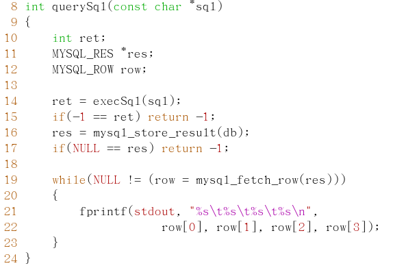
8）在结果集中定位到任意行
void
mysql_data_seek(MYSQL *res, unsigned long long offset);
如：mysql_data_seek(MYSQL *res,
int n);
//将结果集指针指向第n行
9）释放结果集使用内存
void
mysql_free_result(MYSQL *res);
说明：释放由mysql_store_result()、mysql_use_result()、mysql_list_dbs()等为一个结果集合分配的内存。当你用完了一个结果集合时，你必须调用mysql_free_result()来释放它使用的内存。
10）将二进制数据转换为sql字符串
unsigned int mysql_escape_string(char *to,
const char *from, unsigned int length);
说明：把在from中的长度为length的字符串编码（如二进制数）转化为在一条SQL语句中可以发给服务器的转义的SQL字符串，将结果放在to中， 并且加上一个终止的空字节
编码的字符是NUL（ASCII
0)、‘\n’、‘\r’、‘\’、‘'’、‘"’
返回值：放进to的值的长度，不包括终止空字符。
11）获取当前行中所有列的长度
unsigned
long *mysql_fetch_lengths(MYSQL_RES *res);
说明：返回在结果集合内的当前行的列长度。如果你计划拷贝字段值，这个长度信息对优化也是有用的，因为你可以避免调用strlen()。另外，如果结果集合中包含二进制数据，你必须使用这个函数确定数据的大小，因为strlen()对包含空字符的任何字段返回不正确的结果。
空列和包含NULL的列的长度值是零。
返回值：成功——表示每列大小的无符号长整数的一个数组(不包括任何终止空字符)。
失败——NULL
注：在sprintf中使用%%——表示实际将输出一个%
9. 综合示例——wave
在mysql数据库中进行wav音频文件的插入、查看、删除和播放
示例源码：/work/database/database
十七、C++
1. 面向对象——是对现实世界理解和抽象的方法
⑴ 对象
对象是人们要进行研究的任何事物，从最简单的整数到复杂的飞机等均可看作对象，它不仅能表示具体的事物，还能表示抽象的规则、计划或事件。
⑵ 对象的状态（属性）和行为
对象具有状态（属性），一个对象用数据值来描述它的状态（属性）。
对象还有操作，用于改变对象的状态，对象及其操作就是对象的行为。
对象实现了数据和操作的结合，使数据和操作封装于对象的统一体中
函数——不占内存
虚函数——占4字节内存（相对于C语言中函数指针）
类 变量——（对象）私有
静态变量——共享
建议：
a.
C++编程中不建议使用结构体
b.
所有可以使用枚举定义的常量不建议使用宏定义
c.
类的定义在xxx.h中
d.
成员函数的实现在xxx.cpp中
2. 通过猜拳游戏的编写理解C++
出拳 （函数）
思考
出拳
 （属性） 管理2位选手
思考
（属性） 管理2位选手
思考
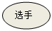变量 记录2个比分
 函数 宣布比赛结果
函数 宣布比赛结果
（动作） 控制比赛过程
string
姓名
年 变量
（变量） 月 生日
日
:注：函数中的数据不变时，应加const修饰，可以防止数据被修改，也可有利于编译器优化。
3. 创建日期类——Date
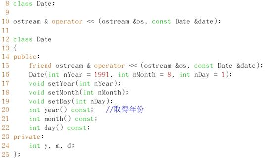
构造函数：
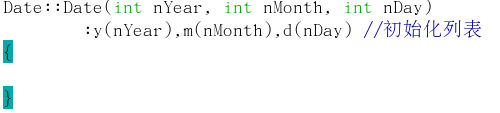
Date类测试：
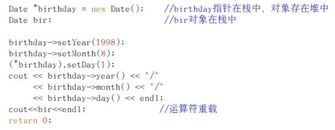
结果：
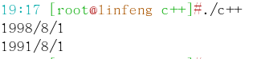
注：使用new创建对象，在堆中分配内存
特殊数据类型：
cout
数据类型 —— std::ostream
cin
数据类型 —— std::isstream
a. 构造函数
构造函数
，是一种特殊的方法（函数） 。主要用来在创建对象时初始化对象， 即为对象成员变量赋初始值，总与new运算符一起使用在创建对象的语句中 。特别的一个类可以有多个构造函数
，可根据其参数个数的不同或参数类型的不同来区分它们 即构造函数的重载
一般构造函数——自定义的有参或无参构造函数，一个类中可以有一个或多个构造函数（基于C++重载函数）
一般情况下如果自定义类中没有定义任何形式的构造函数，系统会为当前类添加一个无参构造函数，如Date();
复制构造函数——如果当前类中没有定义构造函数，系统会为当前类添加一个默认复制构造函数
如：Date(const Date &date); //参数为当前类的常引用
注：当类中有指针成员时，由系统默认创建该复制构造函数会存在风险，具体原因请查询 有关 “浅拷贝” 、“深拷贝”
b. 引用
引用——实际上就是一个别名
如: int a = 9;
int &b = a; // 声明一个引用，它引用了a，实际上此条语句没有分 配内存，只是给a取了一个别名叫b
b
= 4;
a
= ? // a = 4
切记：声明引用时，一定要进行直接初始化
常引用——意味着在Date复制构造函数调用时，不会改变date所引用对象的值，只能调用Date类中的末尾带const的成员函数。
c. 使用引用的好处
示例：void
aaa(Date date)
aaa(a);
函数调用时，是实参为形参赋值——Date datel = a;
void
bbb(Date &date)
bbb(b);
此时——Date &date2 = b;
date1调用Date类的复制构造函数实例化一个Date对象
date2是一个引用它不调用任何函数，date2作为对象传入到bbb函数中，即意味着bbb函数可以修改b对象（二者除名外，其余完全相同，可以调用b中的所有函数）
基于以上原因，所以函数参数时引用时，多数情况下都写为常引用
d. C++中函数的形参允许有默认值
原则：右对齐，只能在类定义时写默认值，在函数定义时，不可以写默认值，函数调用时有默认值的形参，可以不传递实参。
如：Date(int nYear, int nMonth = 8, int nDay = 3);
4. 创建人类——Human
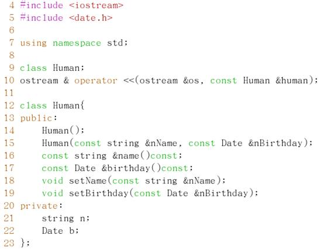
a. 对象与常对象
b. 对象的引用与常引用
声明：
void setName(string &nName);
void setName1(const string &nName);
调用：
setName(“zhangshan”);
// 错误
setName1(“zhangshan”); // 正确
这两个调用的实参均不是string对象，要在调用时示例化出一个string对象，再调用此时自动实例化的对象是一个常对象
修改：
string
n(“zhangshan”); //栈中分配空间
setName(n);
// 正确
setName1(n);
// 正确
c. 对象的指针与常指针
声明：
void
setName2(string *nName);
void
setName2(const string *nName);
调用：
setName2(new
string(“zhangshan”)); //错误 ？？
setName3(new
string(“zhangshan”)); //正确
使用const修饰时，*nName不能改变，因此调用时所传的实参，应为一个常量。
注意：使用new string(“zhangshan”)是在堆里分配空间，它返回的是一常指针
修改：
string
*n = new string(“zhangshan”); //指针n是在栈中分配空间，指向堆
setName2(n);
// 正确
setName3(n);
// 正确
d. 啥时候用指针、啥时候用引用
申请空间在：
堆——用指针
栈——用引用
e. 一般情况在哪些位置使用引用
函数参数
返回值
f. 解析const Date &Human::birthday()const;
成员函数——后加const：代表此函数不修改类内的成员值，即可以通过常引用来调用此函数，如果不写const的同名同参函数与这个带const的函数形成重载，因此通过常引用或常指针调用的birthday函数是带const的，而非常引用或非常指针调用birthday函数是不带const的。
成员函数——前加const：此函数的返回值类型是什么？其const的限定于函数无关，而与函数的返回值有关。
一般情况下，在书写程序时，const一般只与指针、引用还有函数限定这三部分有关
const使用，想要改变以上所说三部分的值时，不加const限定
不想改变时，添加const限定，主要视具体情况而定
g. 重载
i. 函数重载
定义：函数名相同，但形参的数量或类型不同构成重载
注意：二义性，存在二义性就无法构成重载。如函数调用时，无法区分到底调用哪个函数时，即二义性。
如：构造函数重载
Date(int nYear, int nMonth = 8, int nDay = 3);
Date(int
nYear);
这两个函数无法构成重载
const string &Human::name() const与
const string &Human::name() 构成一对重载函数
ii. 运算符重载
如：ostream & operator
<< (ostream &os, const Date &date);
使用：cout<<human.birthday()<<endl;
关键字：operator
构造运算符重载的步骤：
1）知道重载哪个运算符
<<
2）找到操作数类型
ostream Date
3）表达式类型
<<human.birthday()
ostream
4）构造数据类型加&（引用）
5）是否可以const限制
类型 数据
ostream & operator <<
(ostream &os, const
Date &date);
类型
数据
h. 可能存在的内存泄露与异常处理
若：
声明：void setName(const string
*nName);
定义：Human::setName(const string
*nName)
{
n
= nName;
}
调用：Human::setName(new string(“zhangshan”));
此用法会导致内存泄露，new string(“zhangshan”)在堆中分配内存，返回的是一个常指针。
原因：delete不能释放一个常指针
注：在使用delete释放任何一个指针后，要赋值为0
delete
n;
n
= 0;
内存的异常处理
类定义中
构造函数通常：
string
*n = 0;
if(0
== n)
n
= new string(“zhangshan”);
析构函数通常：
if(n
!= 0)
{
delete
n;
n
= 0;
}
5. 创建选手——Competitor::Human
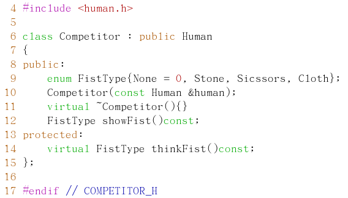
构造函数：
注：子类实例化时，应先构造父类对象
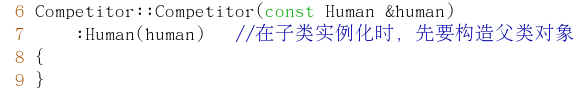
a. 继承后权限：
|
|
public
|
protected
|
private
|
|
public
|
public
|
protected
|
private
|
|
protected
|
protected
|
protected
|
private
|
|
private
|
——
|
——
|
——
|
规律：父类中的共有、保护继承后，取权限最低的权限
类内、子类、对象均可访问
类内、子类可访问
 类内可访问
类内可访问
b. 枚举与int类型之间赋值时转换
枚举可以自动转换为整型，而整型值转换为枚举一定要使用强制类型转换，但使用强制类型转换，一定要注意int的值，是否在枚举的范围内。整型值范围过大，不在范围内强制转换可能会使数据丢失而报错。
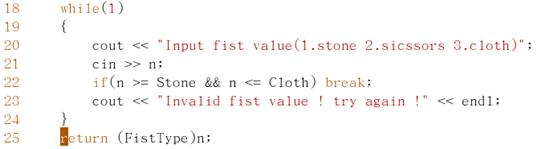
c. 多态特性
多态是指同样的消息被不同类型的对象接收时导致不同的行为。所谓消息是指对类的成员函数的调用，不同行为指不同的实现，也就是调用了不同的函数
体现：
静态—（编译时）—重载
动态—（运行时）—重写
d. 重写
在子类中，定义一个与父类完全相同的成员函数
重写满足三条件——运行过程中的多态
1）类之间满足赋值兼容规则（参数是否对应）
2）要声明为虚函数
3）要由成员函数调用或通过指针、引用来访问虚函数
e. 虚函数
虚函数是动态绑定的基础，经过派生之后，在类中可以实现运行过程的多态
关键字：virtual
在派生类中，可以不显式给出虚函数的声明，只是对基类中虚函数的重写，此时也可以添加virtual关键字，如MachCompetitor类中的thinkFist()函数。此时派生类中的虚函数便覆盖了基类的虚函数，同时，虚函数还会隐藏基类中同名函数的所有其他重载形式。
注：用派生类对象的指针仍然可以调用基类中被派生类覆盖的成员函数，方法是使用“::”进行限定。如：基类名::函数名（）
注意：在重写继承来的虚函数时，如果函数有默认形参值，不要重新定义不同的值。原因：虽然虚函数是动态绑定的，但默认形参时静态绑定的。也就是说，通过一个指向派生类对象的基类指针（简单说，一个指向子类的父类指针），可以访问到派生类的虚函数，但默认的形参值却只能来自基类的定义。
6. 创建机器人选手——MachCompetitor::Competitor
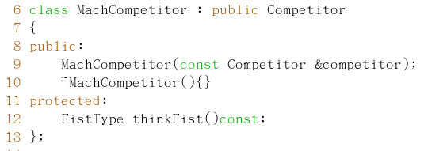
a. 随机数
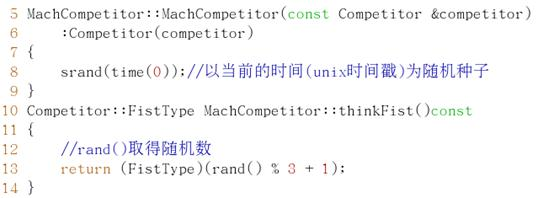
注：C++中，函数、变量的使用都要在一定的域中，全局域可以不加说明
rand()随机函数与随机种子
7. 创建裁判类——Judge::Human
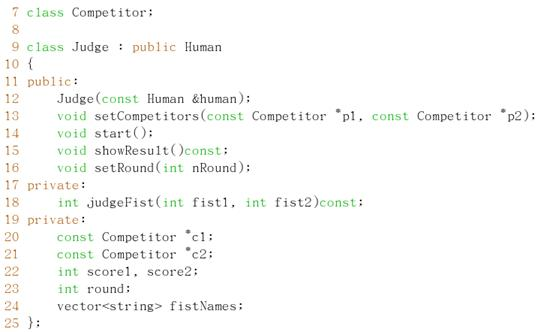
在不能使用引用时，可以使用指针。？？？
a. 类的说明——技巧
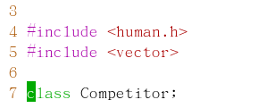
当前类定义中只使用了Competitor的指针形式，所以此处只需要做类的说明，而不需要类的定义(包含头文件)，但需要在.cpp文件中进行头文件包含
优点：当Competitor作任何修改时，当前文件都不需要重新编译，提高整个项目的编译速度。
b. 容器类
|
容器类
|
中文名
|
存储形式
|
用途
|
|
vector
|
向量
|
相当于数组
|
顺序存储或随机或顺序读写
|
|
list
|
列表
|
链表
|
随机存储，顺序读写
|
|
map
|
映射
|
指针数组+动态分配内存
|
以上二者折中
|
向量与列表的声明：
vector<T>
对象名(n); //声明一个存储n个T类型的对象
如：vertor<int>
vint(8); //分配8个int存储空间
vector<Date>
vDate; //只实例化容器对象，不分配存储内存
映射声明
Map<K,
T> 对象名(n);
//K表示键——（特点）唯一，相当于数组下标；T代表类型，相当于数组元素类型
如：map<string,
Date> m;
列表使用
示例：方法一
list<int>
vList;
vList.push_back(2);
//想列表中添加数据
vList.push_back(5);
vList.push_back(7);
方法二：
list<int>::iterator
it; //声明一个迭代器
it
= vList.begin(); //将迭代器指向容器首元素
while(it
!= vList.end())
{
cout<<*it;
//*it取迭代器所指向的元素值
*it++；
}
向量使用
向量可以使用列表方法访问，同时也可以使用下列方法访问
vector
<int> vVector(8); //8用于指定向量长度
vVector[0]
= 8;
vVector[1]
= 4;
vVector[2]
= 9;
向量如果实例化时，没有指定向量长度，那么不能使用以上方法为向量存入数据，只能使用push_back和push_
8. 简单算法——求模运算
1）模型：
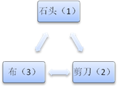胜——等于1
败——非1或0
平——等于0
2）目的
（甲-乙）：甲胜？乙胜；
3）数据构造——甲胜
|
甲
|
乙
|
甲-乙
|
甲-乙+2
|
甲-乙+3
|
（甲-乙+3）%3
|
乙-甲+3
|
（乙-甲+3）%3
|
|
石头
|
石头
|
0
|
2
|
3
|
0
|
3
|
0
|
|
剪刀
|
-1
|
1
|
2
|
2
|
4
|
1
|
|
布
|
-2
|
0
|
1
|
1
|
5
|
2
|
|
剪刀
|
石头
|
1
|
3
|
4
|
1
|
2
|
2
|
|
剪刀
|
0
|
2
|
3
|
0
|
3
|
0
|
|
布
|
-1
|
1
|
2
|
2
|
4
|
1
|
|
布
|
石头
|
2
|
4
|
5
|
2
|
1
|
1
|
|
剪刀
|
1
|
3
|
4
|
1
|
2
|
2
|
|
布
|
0
|
2
|
3
|
0
|
3
|
0
|
将甲、乙两选手的比赛结果进行数据构造
甲：
|
胜
|
-1
|
-1
|
2
|
|
败
|
-2
|
1
|
1
|
|
平
|
0
|
0
|
0
|
胜时为1
因此，使用取模运算，可以实现，取模运算的结果有两种：一种为0， 一种小于被取模的数
附：
1）静态共有成员函数
a.
在类定义中说明为static，但在类外做函数定义时，不能再说明为static
b.
静态共有成员函数可以直接通过域运算符来访问，即不需要实例化对象
c.
在静态成员函数中，只能使用静态成员变量（静态成员变量对所有对象共享）
d.
静态成员一定要在类外进行初始化
e.
静态成员函数与静态成员变量，常常应用于整个程序调用的一些数据的存储与提取。
2）内联函数
定义：关键字inline
inline
类型说明符 函数名（含类型说明的形参表）
{
//语句序列
}
内部机制：编译时，将内联函数以相应代码代替，与宏类似
作用：减少频繁调用小子程序的运行时间开销
内联函数与宏的区别：
a.
内联函数是函数，宏不是
b.
内联函数中不能有复杂的控制语句，如for，switch-case等，适用于1~5行的小函数
十八、QT开发 — 4
1. 安装Qt开发工具qtcreator
1）安装
a.
下载qt-sdk-linux-x86-opensource-2010.04.bin
b.
赋予qt-sdk-linux-x86-opensource-2010.04.bin包可执行权限
c.
执行该文件 ./ qt-sdk-linux-x86-opensource-2010.04.bin
3）汉化
a.
下载汉化包qtcreator_zh_CN.qm.tar.gz
b.
解压到Qt集成开发环境多语言转换目录
/opt/qtsdk/share/qtcreator/translations/
4）第三方字体
第一次编译中出现字体库错误，手动添加第三方字体库fontconfig-2.7.3
过程： #./configure
#make
#make install
2. Qt创建项目
类名首字母必须大写
3. Qt类
4. Qapplication类
5. 信号和槽
a. 什么是信号、槽
1) 信号
当对象改变其状态时，将产生对象。信号就由该对象发射 (emit) 出去，而且对象只负责发送信号，它不知道另一端是谁在接收这个信号。这样就做到了真正的信息封装，能确保对象被当作一个真正的软件组件来使用。
2）槽
用于接收信号，而且槽只是普通的对象成员函数。一个槽并不知道是否有任何信号与自己相连接。而且对象并不了解具体的通信机制。
b. 信号和槽的连接
1) 信号和槽编辑器
2）控件右键转到槽
3）Qobject::connect
|
信号
|
连接
|
信号
|
一个信号发射，另一信号跟着发射
|
|
信号
|
槽
|
|
|
一个信号
|
多个槽
|
调用顺序与连接顺序无关
|
|
多个槽
|
一个槽
|
|
c. 自定义信号和槽
当Qt类想主动向类外传递数据时，需要自定义信号来实现。
d. Q_OBJECT
MOC
元对象编译器（moc）解析一个C++文件中的类声明并且生成初始化元对象的C++代码。元对象包括所有信号和槽函数的名称，还有这些函数的指针。
UIC
处理ui图形中的XML代码，生成”ui_xxxxx.h”
RCC
资源文件编译器，将文件转化为数据与程序编译到一起，随可执行文件一同发布。好处——资源文件不容易被篡改
6. Qt语言乱码
中文乱码解决：
Main.cpp 中添加 #include <QTextCodec>
QtextCodec::setCodecForFr(QtextCodec::codecForName(“utf8”));
出现乱码的原因：
String的内部默认编码时unicode，而我们编译器当前的字符编码，可能是GBK或UTF-8
7. 查找对话框
8. 事件处理
9. 图片查看
10.
ClickMe游戏——事件处理
10. 五子棋 —— TCP通信
使用网络通信的项目，必须在项目文件中添加：QT += network
a. 游戏界面
1) Qpinter —
绘制器
棋盘、棋子
2）容器 — 向量
使用迭代器遍历向量
b. QTcpSocket
封装数据通信套接字
c. QTcpServer
封装监听套接字
网络通信部分：
1）网络数据类型是否分类
a.
聊天信息
b.
用户信息
c.
棋子坐标
2）通信协议制定
数据包长度（quint16） + 数据类型（quint8） + 数据
d. IP地址转换
11．数据库
附：
Qt中父窗口析构，子类也将一同被析构
在设计器中，按钮等上添加&A 相当于快捷方式Alt + A。
资源文件——可支持任意类型的文件
附：常用类说明
1）
Qstring类
功能：主要针对字符串的处理，如后追加（append）、前添加（prepend）比较（compare）、替换、整型转字符串、
静态共有成员函数：
比较：
int compare
( const QString & s1, const QString & s2, Qt::CaseSensitivity cs )
转格式编码：
QString fromAscii
( const char * str, int size = -1 )
QString fromUtf8
( const char * str, int size = -1 )
基于本地平台？？？？？
int localeAwareCompare
( const QString & s1, const QString & s2 )
整型转字符串：
QString number (
long n, int base = 10 )
2）
Qlabel类
功能：QLabel提供了一个文本或图像的显示的标签，可以设置它的属性，如位置（alignment）、文本（text）、图片（picture、pixmap）
静态共有函数：无
3）
Qimage类
功能：QImage的类提供独立于硬件的图像显示，它允许直接访问的像素数据，并可以作为一个绘制设备。
QImage则是为I/O，为图片像素访问以及修改而设计的。如果你 想访问图片的像素或是修改图片像素，则需要使用QImage
静态共有函数：
QImage fromData
( const uchar * data, int size, const char * format = 0 )
QMatrix
trueMatrix ( const QMatrix & matrix, int width, int height )
QTransform trueMatrix
( const QTransform & matrix, int width, int height )
功能：QPixmap是专门为绘图而生，当需要绘制图片时你需要使用Qpixmap
静态共有函数：
自动获取个平台的深度（浓度）
int defaultDepth
()
QPixmap fromImage
( const QImage & image, Qt::ImageConversionFlags flags = Qt::AutoColor )
QPixmap grabWidget
( QWidget * widget, const QRect & rectangle )
QTransform trueMatrix
( const QTransform & matrix, int width, int height )
QMatrix trueMatrix
( const QMatrix & m, int w, int h )
功能：窗口中一行的编辑
静态共有函数：
6）
QComboBox类
功能：组合按钮和弹跳列表
静态共有函数：无
功能：旋转窗口部件
静态共有函数：无
8）
QMessageBox类
功能：消息提示窗口类
静态共有函数：
void about
( QWidget * parent, const QString & title, const QString & text )
void aboutQt
( QWidget * parent, const QString & title = QString() )
StandardButton critical
( QWidget * parent, const QString & title, const QString & text,
StandardButtons buttons = Ok, StandardButton defaultButton = NoButton )
StandardButton information
( QWidget * parent, const QString & title, const QString & text,
StandardButtons buttons = Ok, StandardButton defaultButton = NoButton )
StandardButton question
( QWidget * parent, const QString & title, const QString & text,
StandardButtons buttons = Ok, StandardButton defaultButton = NoButton )
StandardButton warning
( QWidget * parent, const QString & title, const QString & text,
StandardButtons buttons = Ok, StandardButton defaultButton = NoButton )
9）
QfileDialog类
功能：提供一对话框，供用户选择文件或目录
静态共有函数：
QString getExistingDirectory
( QWidget * parent = 0, const QString & caption = QString(), const QString
& dir = QString(), Options options = ShowDirsOnly )
QString getOpenFileName
( QWidget * parent = 0, const QString & caption = QString(), const QString
& dir = QString(), const QString & filter = QString(), QString * selectedFilter
= 0, Options options = 0 )
QStringList getOpenFileNames
( QWidget * parent = 0, const QString & caption = QString(), const QString
& dir = QString(), const QString & filter = QString(), QString *
selectedFilter = 0, Options options = 0 )
QString getSaveFileName
( QWidget * parent = 0, const QString & caption = QString(), const QString
& dir = QString(), const QString & filter = QString(), QString *
selectedFilter = 0, Options options = 0 )
10） Qmatrix类
功能：将2D图像生成一个坐标系统，进行操作，多用于映射处理，如旋转
静态共有成员：无
11） Qaction类
功能：实现菜单项、实现工具按钮
信号：
点击——toggled(bool)
选中——activated()
12） QStyledItemDelegate类
功能：
十九、嵌入式系统构建
|
bootloader
|
|
kernel
|
rootfs
|
userfs
|
u-boot环境变量 与部分启动界面
注：PC机中的引导程序为BIOS+ntloader
1、搭建开发环境
常用编译器有：
|
arm-linux-gcc-版本号
|
安装直接解压，路径
添加环境变量
|
/
|
|
cross-版本号
|
/usr/local/arm
|
a. 安装arm-linux-gcc编译器
1）解压
#tar zxvf arm-linux-gcc-4.4.3.tar.gz -C /
2）配置环境变量
打开#vi /etc/profile
添加：export
set PATH=$PATH:/opt/FriendlyARM/toolschain/4.4.3/bin
3）测试
#arm-linux-gcc test.c
使用file a.out，查看是不是ARM架构
#file a.out
a.out: ELF 32-bit LSB executable, ARM, version 1 (SYSV), for
GNU/Linux 2.6.32, dynamically linked (uses shared libs), not stripped
4）可能出现错误
#arm-linux-gcc a.c
/opt/FriendlyARM/toolschain/4.4.3/libexec/gcc/arm-none-linux-gnueabi/4.4.3/cc1:
/usr/lib/libstdc++.so.6: version `GLIBCXX_3.4.9' not found (required by
/opt/FriendlyARM/toolschain/4.4.3/lib/libppl_c.so.2)
/opt/FriendlyARM/toolschain/4.4.3/libexec/gcc/arm-none-linux-gnueabi/4.4.3/cc1:
/usr/lib/libstdc++.so.6: version `GLIBCXX_3.4.9' not found (required by
/opt/FriendlyARM/toolschain/4.4.3/lib/libppl.so.7)
原因：库版本过低，没有GLIBCXX_3.4.9
#strings /usr/lib/libstdc++.so.6 | grep
GLIBCXX
GLIBCXX_3.4
GLIBCXX_3.4.1
GLIBCXX_3.4.2
GLIBCXX_3.4.3
GLIBCXX_3.4.4
GLIBCXX_3.4.5
GLIBCXX_3.4.6
GLIBCXX_3.4.7
GLIBCXX_3.4.8
GLIBCXX_FORCE_NEW
解决方法：使用libstdc++.so.6.0.10代替
在/usr/lib/下
#ln –sf libstdc++.so.6
libstdc++.so.6.0.10
b. 编译u-boot
机器码——与内核中的机器码必须一致，系统才可启动（可以自定义，但必须一致）
修改开发板相关配置文件include/configs/mini2440.h
//uboot启动后，内核加载的延时
139#define
CONFIG_BOOTDELAY 1
//Linux内核引导参数
140 #define
CONFIG_BOOTARGS "noinitrd console=ttySAC0,115200
不使用初始启动镜像 标准输入输出定向到串口0
init=/linuxrc
root=/dev/nfs nfsroot=192.168.11.11:/work/embedded/rootfs
指定根文件系统 使用绝对路径
ip=192.168.11.22:192.168.11.11:192.168.11.11:255.255.255.0:micro2440.arm9.net
开发板IP
网关
DNSIP 子网掩码 主机名
:eth0:off"
//MAC地址
141 #define
CONFIG_ETHADDR
08:08:11:18:12:27
//子网掩码
142 #define
CONFIG_NETMASK
255.255.255.0
//开发板IP
143 #define
CONFIG_IPADDR 192.168.11.22
//主机IP
144 #define
CONFIG_SERVERIP 192.168.11.11
//主机网关
145 #define
CONFIG_GATEWAYIP 192.168.11.11
146 #define
CONFIG_OVERWRITE_ETHADDR_ONCE
147
148 /*#define
CONFIG_BOOTFILE "elinos-lart" */
149 #define
CONFIG_BOOTCOMMAND "tftp 0x30007fc0 uImage \; bootm"
命令1
表命令结束 命令2
//bootm 通过uImage引导Linux操作系统
注：当使用zImage引导时，将丢失CONFIG_BOOTCOMMAND配置参数
编译命令：
#make ARCH=arm CROSS_COMPILE=arm-linux-
mini2440_config
交叉编译器前缀
配置文件
#make ARCH=arm CROSS_COMPILE=arm-linux-
all
c. 所需服务的搭建tftp、nfs服务
1）tftp服务的配置
tftp——简单的文本传输协议，用于给开发板共享内核以及引导程序重新固化时。
l
修改配置文件/etc/xinetd.d/tftp
service tftp
{
socket_type = dgram #网络类型
protocol = udp
wait = yes
user = root
server =
/usr/sbin/in.tftpd
server_args = -s /tftpboot #-s 路径 用于指定服务器共享目录
disable
= no #是否禁用此服务
per_source = 11
cps = 100 2
flags = IPv4
}
l
重启服务：
#service xinetd.d restart
l
测试是否成功：
i.
安装tftp客户端，通过系统光盘安装
#mount /dev/cdrom /media/
#rpm -ivh /media/Server/tftp-0.49-2.i386.rpm
ii.
使用tftp命令下载文件测试
#tftp 192.168.11.11
tftp> get test
注：所有用于tftp下载的文件对所有用户都必须至少有可读权限（即444），否则无法下载。
2）nfs服务的配置
nfs——网络文件系统，用于为开发板共享文件系统，延长flash寿命，提高开发效率。
l
打开配置文件/etc/exports （默认为空文件）
添加
/work/embedded/rootfs
*(rw,sync,no_root_squash)
书写格式：
共享目录 共享的目标名或IP（共享参数列表）
每行都是一个共享目录的配置
rw — 读写 sync — C/S数据，同步更新
no_root_squash — 不压制root权限
注：参数之间用逗号分隔，并且逗号两端不能有空格
l
重启服务
#service portmap start
#service
nfs restart
l
测试服务
i.
挂载共享文件系统
#mount 192.168.11.11:/work/embedded/rootfs/
/media/
ii.
查看共享目录与挂载目录中，文件是否同步
2. Bootleader引导程序——u-boot
搭建完开发环境后，对u-boot进行设置，基本操作命令：
a. 通过tftp将文件下载到开发板内存
tftp 内存地址 文件名
注：地址为一个可用的内存地址，用于临时存放u-boot文件，一般选用0x30008000，我们以明确知道可以的内存地址
b. Nand flash操作命令
1）擦除flash
nand erase 起始地址 长度（单位字节）
注：所以长度单位数值均按字节,使用十六进制数值表示，由于nand flash按页存储，所以长度必须是页的整数倍，页大小为64KB
如：nand
erase 0x30008000 200000 //擦除0x30008000后2M的空间
2MB=2048KB=2048*2048Byte=0x200000Byte
2）烧写flash
nand write 内存地址 flash起始地址 长度
3）从nand
flash中读取数据到内存
nand read 内存地址 flash起始地址 长度
c. 关于环境变量 —— u-boot
1）显示环境变量
printenv [变量名]
2）设置环境变量
setenv 变量名 [值]
例：setenv ipaddr 192.168.11.22
注：所设置的环境变量中，有多个值中间由空格或分号隔开时，使用单引号将其括起来。如setenv bootcmd 'nand read 0x30008000 0x200000
0x400000;bootm'
3）保存环境变量
saveenv
d. 关于引导命令
1）bootm
使用uImage引导
2）go
内存地址
使用zImage引导
e. 主要环境变量
|
bootargs
|
引导参数
|
|
bootcmd
|
引导命令
|
|
bootdelay
|
延时时间（引导程序与加载内核之间的时差）
|
|
ipaddr
|
开发板IP
|
|
serverip
|
宿主机IP
|
|
gateway
|
网关IP
|
|
netmask
|
子网掩码
|
|
eth0addr
|
网卡地址
|
|
baudrate
|
波特率
|
（run，autoscr---不是所有uboot必带）
f. 自动加载配置信息（autoscr）
将脚本镜像下载内存
tftp 0x30008000 example.img
运行脚步
autoscr 0x30008000
4. 脚本的生成
工具：
mkimage
位置：
uboot/tools/
命令：
mkimage -A ARM -O linux -T script -C none -a 0 -e 0 -n"example
script" -d /home/zhangli/example.script example.img
参数解析：
-A，指定目标映像的体系结构，本实验中是ARM
-O，指定目标映像的操作系统，本实验中是Linux；
-T，指定目标映像的类型，本实验中是脚本；
-C，指定目标映像的压缩类型，脚本不需要压缩，none；
-a，设置U-Boot的加载地址（loadaddress），本实验中设为0；
-e，设置U-Boot映像的入口点（entry point）地址，设为0，即从脚本的起始地方开
始执行；
-n，设置映像的名称；
-d，制作映像的脚本文件
g. 开发板nand下载引导
1）修改uboot环境bootargs、bootcmd
setenv bootargs 'root=/dev/mtdblock2 noinitrd
console=ttySAC0,115200'
setenv
bootcmd 'nand read 0x30008000 0x200000 0x400000;bootm'
参数解析：（参考编译u-boot）
（光盘自带文件系统已存在，自制文件系统暂时未测）
2）生成zImage
make 或makezImage
3）添加内核启动信息
16:23 [root@linfeng
boot]#mkimage -n 'linux-2.6' -A arm -O linux -T kernel -C none -a 0x30008000 -e
0x30008040 -d zImage zImage.img
工具：mkimage
参数解析：
-A指定cpu体系结构
-O指定是什么操作系统
-T指定映像类型，如standalone、kernel、ramdisk、multi、firmware、script、filesystem等
-C指定映像压缩方式，如none(不压缩)、gzip、bzip2。这里不对uImage进行压缩
-a指定映象在内存中的加载地址，映象下载到内存中时，要按照用MKIMAGE制作映象时，这个参数所指定的地址值来下载
-e 指定映象运行的入口点地址，这个地址就是-a参数指定的值加上0x40（因为前面有个MKIMAGE添加的0x40个字节的头）
-n 指定映象名
-d 指定制作映象的源文件
4）内核镜像分析
uImage与zImage的区别：
这两个都是内核，zImage是真正的内核，在内存中的地址0x30008000；而uImage是包含64字节头的内核，在头中存放着bootargs环境变量，在内存中的地址0x30007fc0
0x40
低地址0
0x30007fc0
0x30008000
高地址
注：当使用zImage引导时，将丢失CONFIG_BOOTCOMMAND配置参数，使用uboot编译时的默认配置参数。
h. 可能报错信息
l
内核不断重启
出错信息：
test:starting
1
data
abort
pc :
[<30008008>] lr :
[<31f98ba4>]
sp : 31f5ba94 ip :
30008000 fp :
31f5bca4
r10: 00000000 r9 :
00000001 r8 : 31f5bfdc
r7 : 00000000 r6 :
31fcbd1c r5 : 31f5c83d r4 :
00000000
r3 : 31f5bfb8 r2 :
30000100 r1 : 000000c1 r0 :
00000000
Flags: nZCv IRQs off FIQs
off Mode
SVC_32
Resetting CPU
...
原因分析：
内核启动入口地址错误，使用make uImage生成的uImage内核镜像的内核启动地址0x30007fc0，使用以上“nand read 0x30008000
0x200000 0x400000;bootm”引导启动出错。
解决方法：
1.使用mkimage修改真正内核zImage镜像启动入口地址为0x30008040，添加64字节的头
2.修改bootcmd变量的内核引导地址nand read 0x30007fc0
0x200000 0x400000（未测）
总结：
内核镜像启动入口地址0x30008000
使用uImage镜像启动，引导地址减64字节（它本身包含了bootargs）
使用zImage镜像启动，zImage添加64字节的头（bootargs），引导地址加64字节
l
tftp下载错误
出错信息：
TFTP
error: 'Permission denied' (0)
出错分析：
上网百度各自的原因，这里只记录我遇到的一次。使用tftp可以下载uboot和内核镜像。只是对文件系统镜像下载出错，可能文件权限不够，赋予所有权限777还是不好使。
文件系统镜像权限：
-rw------- 1 root root 19421952 05-17 14:46 root.img
tftpboot里面文件权限：
drwxr-xr-x
4 root root 4096 2014-09-25 linux-install
-rw------- 1 root root 19421952 05-17 14:46
root.img
-rw-r--r-- 1 root
root 0 02-05 13:38 test
-rwxr-xr-x 1 root root 260300
12-15 23:10 u-boot.bin
-rwxr-xr-x 1 root root 2269732 05-17
13:15 uImage
-rw-r--r-- 1 root root 2268944 05-14 16:23
zImage.img
对比两种文件权限，所有可以进行下载的文件都有可读权限，修改文件系统镜像权限：chmod 644 root.img可以进行下载，因此所有用于tftp下载的文件都必须至少用有所有用户的可读权限。
3. 编译Linux内核
a.下载内核源码
去Linux官网下载所需版本的内核源码linux-2.6.32.2.tar.gz
b. 解压内核源码
#tar zxvf linux-2.6.32.2.tar.gz
c. Linux内核目录结构
#tree -L 1
.
|-- COPYING
|-- CREDITS
|-- Documentation
|-- Kbuild
|-- MAINTAINERS
|-- Makefile
|-- Module.symvers
|-- README
|-- REPORTING-BUGS
|-- System.map
|-- arch #板级支持依赖（开发板、处理器架构）
|-- block #块设备驱动
|-- crypto
|-- drivers #设备驱动
|-- firmware
|-- fs #文件系统
|-- include #内核头文件目录之一
|-- init #内核初始化代码
|-- ipc #进程通信代码
|-- kernel #内核核心代码
|-- lib #内核库函数
|-- mm #内存管理代码
|-- modules.order
|-- net #网络协议代码
|-- samples
|-- scripts
|-- security
|-- sound #音频设备驱动代码
|-- tools
|-- usr
|-- virt
|-- vmlinux
`-- vmlinux.o
d. 修改Micro440板级支持配置文件
参考标准的mach-smdk2440.c进行修改
1）使用smdk2440启动配置文件替换mini2440
#cd arch/arm/mach-s3c2440/
#cp mach-smdk2440.c mach-mini2440.c
2）修改机器名称
MACHINE_START(MINI2440, "Micro2440 development
board")
4）将系统时钟修改为系统时钟（12M）
static void __init smdk2440_map_io(void)
{
s3c24xx_init_io(smdk2440_iodesc,
ARRAY_SIZE(smdk2440_iodesc));
s3c24xx_init_clocks(12000000);
s3c24xx_init_uarts(smdk2440_uartcfgs,
ARRAY_SIZE(smdk2440_uartcfgs));
}
5）删除smdk_machine_init()
static void __init smdk2440_machine_init(void)
{
s3c24xx_fb_set_platdata(&smdk2440_fb_info);
s3c_i2c0_set_platdata(NULL);
platform_add_devices(smdk2440_devices,
ARRAY_SIZE(smdk2440_devices));
smdk_machine_init();
}
e. 编译内核
1）修改内核根目录的Makefile文件
ARCH = arm
CROSS_COMPILE = arm-linux-
注：末尾直接回车，不能留有空格
2）导入原来的mini2440配置
#make mini2440_defconfig
注：.config是Linux内核默认配置文件，将mini2440配置文件拷贝为.confog
3）编译
#make uImage
6）出现错误
1st.
错误提示：找不到mkimage
–u-boot images will not be built
解决方法：将u-boot/tools下的mkimage复制到交叉编译器的bin目录下
2nd.
3rd.
.
4. 内核配置原理
#make menuconfig
文件
1)
.config
配置文件，通过make生成编译规则
格式：
#注释
CONFIG_xxx=y //编入内核——不可移除
CONFIG_xxx=xxx
//内核源码中添加宏定义
宏名 宏值
CONFIG_xxx=m
//编译为模块——可移除
2)
Kconfig
格式：
config
配置项名称（大写，下划线连接）
#定义一个配置项。如：config
DM9000
tristate
模块/内核
或
bool
内核
或
选其一
int
整数——用户输入
或
string 字符串
depend
on xxx || xxx //依赖表达式
select
xxx //关联选中
help
*帮助信息*
3)
Makefile
格式：
obj-y
obj-m
obj-
//不编译
5. Linux驱动程序
a. 通用设备驱动
|
驱动程序
|
|
代码
（通用）
|
参数
（各异）
|
|
drivers/
|
arch/
|
二十、移植nand flash
Flash——内核中，分区
Nand
flash——MTD内存技术设备
1. Linux-2.6.32.2 内核所支持的 Nand Flash 类型
Linux2.6.32.2 已 经 自 带 了 大 部 分
Nand Flash 驱 动 ， 在 linux-2.6.32.2/drivers/mtd/nand/nand_ids.c 文件中，定义了所支持的各种 Nand Flash 类 型

2. MTD系统层次
MTD——Memory Technology Device (内存技术设备)
设备号90 设备号31
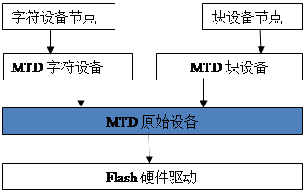
注：
MTD原始设备层两部分
一、MTD原始设备通用代码
二、各个特定的Flash数据——分区
Flash硬件驱动层
负责Flash硬件设备的读、写、擦除
NOR Flash驱动 drivers/mtd/chips/
Nand Flash驱动drivers/mtd/nand/3. nand flash
分区
Nand
flash大小256M，预分区数4个
分区代码：
arch/arm/mach-s3c2440/mach-mini2440.c
a. 一个结构体变量定义一个分区
1）结构体定义
文件：include/linux/mtd/partitions.h
struct mtd_partition {
char
*name; /* identifier string */
uint64_t
size; /* partition size
*/
uint64_t
offset; /* offset within the master
MTD space */
uint32_t
mask_flags; /* master MTD flags to
mask out for this
partition */
struct nand_ecclayout *ecclayout;
/* out of band layout for this partition
(NAND only)*/
};
2）4个分区
static struct mtd_partition micro2440_nand_partitions[] = {
[0]
= {
.name = "bootloader",
.size = 0x200000,
.offset = 0,
},
[1]
= {
.name = "kernel",
.size = 0x600000,
.offset = 0x200000,
},
[2]
= {
.name = "rootfs",
.size = 0x4000000,
.offset = 0x800000,
},
[3]
= {
.name = "userfs",
.size = 0xb800000,
.offset = 0x4800000,
},
};
b. 多块nand flash芯片
1）结构体定义
文件：arch/arm/plat-s3c/include/plat/nand.h
struct s3c2410_nand_set {
unsigned
int disable_ecc:1;
unsigned
int flash_bbt:1;
int nr_chips;
int nr_partitions;
char *name;
int *nr_map;
struct
mtd_partition *partitions;
struct
nand_ecclayout *ecc_layout;
};
注：一个结构体对于一个nand flash芯片
2）一块nand flash芯片
static struct s3c2410_nand_set micro2440_nand_sets[] = {
[0]
= {
.name = "NAND_Flash",
.nr_chips = 1,
.nr_partitions =
ARRAY_SIZE(micro2440_nand_partitions),
.partitions =
micro2440_nand_partitions,
},
};
注：ARRAY_SIZE（）宏定义，计算数组大小
c. nand flash芯片时序
时序设置，可根据芯片手册与实际测试
1)
结构体定义
文件：arch/arm/plat-s3c/include/plat/nand.h
struct s3c2410_platform_nand {
/* timing information for
controller, all times in nanoseconds */
int tacls; /* time
for active CLE/ALE to nWE/nOE */
int twrph0; /* active time
for nWE/nOE */
int twrph1; /* time for
release CLE/ALE from nWE/nOE inactive */
unsigned
int ignore_unset_ecc:1;
int nr_sets;
struct s3c2410_nand_set
*sets;
void
(*select_chip)(struct s3c2410_nand_set *,
int chip);
};
2)
分区时序设置
static struct s3c2410_platform_nand
micro2440_nand_platform = {
.tacls = 20,
.twrph0 = 30,
.twrph1 = 20,
.nr_sets =
ARRAY_SIZE(micro2440_nand_sets),
.sets = micro2440_nand_sets,
.ignore_unset_ecc = 1,
};
d. 注册设备到内核
1）结构体定义
文件：arch/arm/plat-s3c/dev-nand.c
struct platform_device s3c_device_nand = {
.name =
"s3c2410-nand",
.id = -1,
.num_resources = ARRAY_SIZE(s3c_nand_resource),
.resource = s3c_nand_resource,
};
2）注册
static struct platform_device *smdk2440_devices[]
__initdata = {
&s3c_device_usb,
&s3c_device_lcd,
&s3c_device_wdt,
&s3c_device_i2c0,
&s3c_device_iis,
&s3c_device_nand,
&s3c_device_dm9k,
};
e. 添加nand flash到Linux内核设备表
struct platform_device结构的dev成员的platfrom_data指针用于指向设备参数结构
static void __init smdk2440_machine_init(void)
{
s3c24xx_fb_set_platdata(&smdk2440_fb_info);
s3c_i2c0_set_platdata(NULL);
s3c_device_nand.dev.platform_data = µ2440_nand_platform;
platform_add_devices(smdk2440_devices,
ARRAY_SIZE(smdk2440_devices));
}
注：在Linux内核中使用自定义变量时，必须static进行修饰，避免出现全局变量，防止内核污染
4. 常见错误
a. FTL header not found
解决方法：在内核配置选项中，关闭FTL下连续4个选项
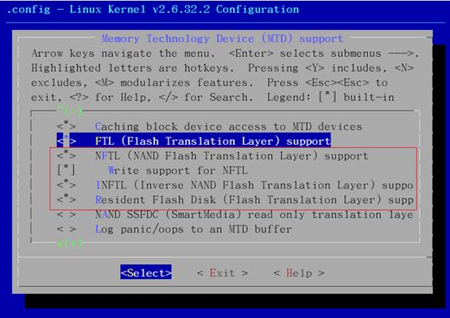
二十一、移植dm9000网卡
1. 设备资源
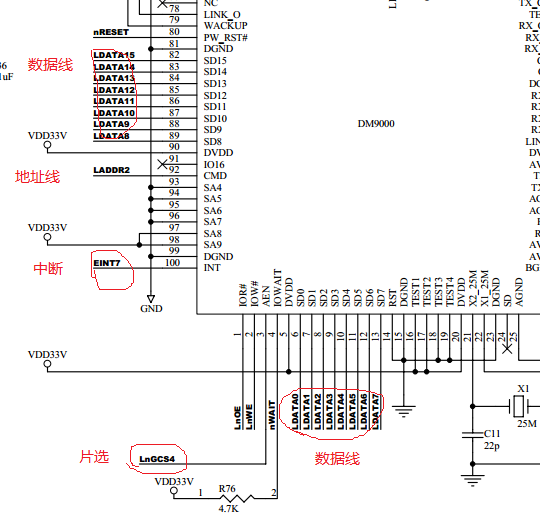
nGCS4
片选——基址0x2000 0000
16位网卡——IO基址—0x300
地址端口—0x300 + 0x00
数据端口—0x300 + 0x04
EINT 中断——中断号IRQ_EINT7
（上升沿）
相关基址：
DM9000网卡设备在内存中的地址
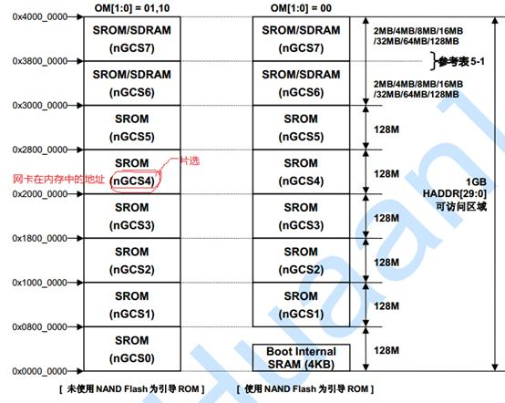
2. 设备资源初始化
Linux-2..6.32.2已经自带了完善的DM9000网卡驱动驱动(源代码位置：linux-2.6.32.2/ drivers/net/dm9000.c)，它也是一个平台设备，因此在目标平台初始化代码中，只要填写好相应的结构表即可，具体步骤如下：
头文件：
#include
<linux/ioport.h>
#include
<linux/dm9000.h>
结构表：
//定义DM9000在内存中的IO基址
#define
MACH_MICRO2440_DM9K_BASE (S3C2410_CS4 + 0x300)
static struct resource
micro2440_dm9k_resources[] = {
[0]
= { //地址端口
.start
= MACH_MICRO2440_DM9K_BASE + 0x00,
.end
= MACH_MICRO2440_DM9K_BASE + 0x03,
.flags
= IORESOURCE_MEM,
},
[1]
= { //数据端口
.start
= MACH_MICRO2440_DM9K_BASE + 0x04,
.end
= MACH_MICRO2440_DM9K_BASE + 0x07,
.flags
= IORESOURCE_MEM,
},
[2]
= { //中断源
.start
= IRQ_EINT7,
.end
= IRQ_EINT7,
//
.flags
= IORESOURCE_IRQ | IORESOURCE_IRQ_HIGHEDGE,
},
};
static struct
dm9000_plat_data micro2400_dm9k_pdata = {
.flags
= DM9000_PLATF_16BITONLY |
DM9000_PLATF_NO_EEPROM,
//MAC地址
.dev_addr
= {0x83, 0x89, 0x76, 0x98, 0x89, 0xaa},
};
static struct
platform_device s3c_device_dm9k = {
.name
= "dm9000",
.id
= -1,
.num_resources
= ARRAY_SIZE(micro2440_dm9k_resources),
.resource
= micro2440_dm9k_resources,
.dev
= {
.platform_data
= µ2400_dm9k_pdata,
},
};
添加DM9000到设备表
static struct
platform_device *smdk2440_devices[] __initdata = {
&s3c_device_usb,
&s3c_device_lcd,
&s3c_device_wdt,
&s3c_device_i2c0,
&s3c_device_iis,
&s3c_device_nand,
&s3c_device_dm9k,
};
3. 调整DM9000所用到的位宽寄存器
网卡初始化时，设定2440处理器，位宽寄存器，片选设备时序控制
头文件：
#if
defined(CONFIG_ARCH_S3C2410)
#include
<mach/regs-mem.h>
#endif
dm9000_init(void)函数中添加：
#if
defined(CONFIG_ARCH_S3C2410)
unsigned
oldval_bwscon = *(volatile unsigned int *)S3C2410_BWSCON;
*(volatile
unsigned int *)S3C2410_BWSCON = (oldval_bwscon & ~(3 << 16)) |
S3C2410_BWSCON_DW4_16 | S3C2410_BWSCON_WS4 |
S3C2410_BWSCON_ST4;
*((volatile
unsigned int *)S3C2410_BANKCON4) = 0X1F7C;
#endif
二十二、制作文件系统
1. 目录
在rootfs下，创建以下目录
mkdir bin dev etc home lib mnt opt proc root sbin
sys tmp usr var
mkdir etc/init.d
tmp文件权限的修改
chmod 1777 tmp #1连置位
目的：多用户时，每个用户只能对自己在tmp中创建、添加的文件有所属权限。
2. 可执行命令——busybox
a. 解压 到 filesystem
tar jxvf busybox-1.20.2.tar.bz2
b. 编译
1）make menuconfig — 选择可编译项
选择原则：选择需要和必须的一些命令
必须修改和选择的项：
Busybox Setting
Build Options
*Build BusyBox as a static binary (no shared libs)
()cross
complier prefix
//添加交叉编译环境，设置为arm-linux-
Coreutils
id
test
dd
mknod
tty
Shells
*ash
Choose
which shell is aliased to ‘sh’ name(ash) ——>
Choose
which shell is aliased to ‘bash’ name(ash) ——>
//这两个选项进入后全选ash
Linux System
mdev
Console 。。。
clear
reset
Editers
//基本全留，可不选patch
Save ….//选择默认保存
2）make
先修改Makefile文件
ARCH
= arm
CROSS_COMPILE
= arm-linux-
3）make
install
最后生成文件，_install目录下，将其全部拷贝到rootfs目录下
cp _install/* ../../rootfs/ -rfap
3. 创建共享库
将交叉编译器中的共享库，拷贝到rootfs/lib目录下。
cp /opt/FriendlyARM/toolschain/4.4.3/arm-none-linux-gnueabi/lib/* lib/
删除其中静态库文件
rm *.a –f
4. 创建基本终端设备console
如果在嵌入式设备文件系统中，没有console设备时，内核加载将出现错误：
unable
to open initial console
添加console设备——参考PC机
|
PC机
|
|
|
10:59 [root@linfeng ~]#ls -l /dev/console
crw------- 1 root root 5, 1 12-19 10:54 /dev/console
|
|
开发板文件系统
|
|
|
mknod -m 666
console c 5 1
|
|
|
11:05 [root@linfeng rootfs]#ll
dev/console
crw-rw-rw- 1 root root 5, 1 12-18 21:23 dev/console
|
5. 解决不断提示找不到/dev/tty2或3或4等情况
同四，添加ttyn等设备
mknod -m 666 tty2 c 4 2
mknod -m 666 tty3 c 4 3
mknod -m 666 tty4 c 4 4
6. 配置文件
a. Linux启动脚本
/etc/init.d/rcS
b. 设置文件系统信息——mount
/etc/fstab
[参考配置文件]
注：none —— 空挂载点
ramfs
—— 挂载到内存（用于tmp临时文件，重启后里面文件将消失）
mdev —— mdev是busybox自带的一个简化版的udev，作用是在系统启动和热插拔或动态加载驱动程序时，自动产生驱动程序所需的节点文件，在文件系统中的/dev目录下的设备节点都是由mdev创建的mdev扫描/sys/class和/sys/block中所有的类设备目录，如果在目录中含有名为"dev"的文件，且文件中包含的是设备号，则mdev就利用这些信息为这个设备在/dev下创建设备节点用法
执行mdev前要挂载 /sys
mount -t tmpfs mdev /dev
mount -t sysfs sysfs /sys
c. 网络配置
/etc/host
/etc/resolv.conf
注：这两个文件从主机复制过来，只需改相关配置参数
d. 用户管理及一些必要文件
touch /etc/mdev.conf
/etc/net.conf /etc/mime.types
mime.type——统一文件类型
用户管理，从主机拷贝group、passwd、shadow文件，其中保留root，bin, daemom,nobody及普通用户，其余各行全删掉
e. shell配置
/etc/profile
f. 登陆功能
在/etc/init.d/rcS中追加 login
附：
udev和mdev
开发板IP解析
到目前为止，开发板中三个阶段一共用到了4个IP地址
|
第一阶段
|
Uboot连接时
|
开发板
|
宿主机
|
独立
|
二者可以相同，也可以是不同网络
|
|
第二阶段
|
文件系统（nfs）
|
开发板
|
宿主机
|
同一
网段
|
|
第三阶段
|
Kernel（tftp）
|
开发板
|
宿主机
|
二十三、驱动LED —— 混杂设备
1. 资源
GPB5、6、7、8引脚功能选择：输出模式
外接低电平时，有效——LED灯亮，具体各引脚的功能和输入输出，参考芯片手册
static unsigned long leds_table[] = {
S3C2410_GPB(5),
S3C2410_GPB(6),
S3C2410_GPB(7),
S3C2410_GPB(8),
};
2．添加源文件到内核
a.修改对应的Kconfig文件，加入配置菜单项
位置：drivers/misc/Kconfig
config MICRO2440_LEDS
bool
“Micro2440 leds support” #菜单项名称
depends
on ARM #依赖于ARM驱动
default
y #默认编写到内核
---help---
#帮助信息
Micro2440 leds drivers
b.修改Makefile文件，加入源文件编译规则
位置：drivers/misc/Makefile
obj-$(CONFIG_MICRO2440_LEDS) += micro2440_leds.o
c.添加micro2440_leds.c
位置：drivers/misc/micro2440_leds.c
一般驱动程序，必备语句
//两个必须头文件
#include
<linux/kernel.h>
#include
<linux/module.h>
//返回值 int 无参数
static
int __int micro2440_leds_init(void)
{
printk(“xxxxxxxxxxx\n”);
//打印输出用法与printf一样
return
0;
}
//返回值 void 无参数
static void __exit micro2440_leds_init(void)
{
printk(xxxxxxxxxxx\n);
}
/* 宏定义*/
// 1.指定模块插入内核时的初始化函数（主要是获取一些资源及初始化）
module_init(micro2440_init);
//函数指针
// 2.指定模块从内核移除或退出时，对一些资源的释放和还原
module_exit(micro2440_exit);
//对该驱动的简单描述
MODULE_DESCRIPTION(“micro2440 leds driver”);
//作者信息
MODULE_AUTHOR(“shaowangquan@gmail.com”);
//选择协议
MODULE_LICENSE(“GPL”);
3.编写驱动程序
1）定义程序功能函数
文件：<linux/fs.h>
结构体：file_operation——1482
struct
file_operations {
struct module *owner;
loff_t (*llseek) (struct file *, loff_t, int);
ssize_t (*read) (struct file *, char __user *, size_t, loff_t *);
ssize_t (*write) (struct file *, const char __user *, size_t, loff_t *);
ssize_t (*aio_read) (struct kiocb *, const struct iovec *, unsigned long,
loff_t);
ssize_t (*aio_write) (struct kiocb *, const struct iovec *, unsigned long,
loff_t);
int (*readdir) (struct file *, void *, filldir_t);
unsigned int (*poll) (struct file *, struct poll_table_struct *);
int (*ioctl) (struct inode *, struct file *, unsigned int, unsigned long);
long (*unlocked_ioctl) (struct file *, unsigned int, unsigned long);
long (*compat_ioctl) (struct file *, unsigned int, unsigned long);
int (*mmap) (struct file *, struct vm_area_struct *);
int (*open) (struct inode *, struct file *);
int (*flush) (struct file *, fl_owner_t id);
int (*release) (struct inode *, struct file *);
int (*fsync) (struct file *, struct dentry *, int datasync);
int (*aio_fsync) (struct kiocb *, int datasync);
int (*fasync) (int, struct file *, int);
int (*lock) (struct file *, int, struct file_lock *);
ssize_t (*sendpage) (struct file *, struct page *, int, size_t, loff_t *, int);
l
定义五个函数：read、write、open、close、ioctl
static int
micro2440_leds_ioctl(struct inode *, struct file *,
unsigned int, unsigned long);
static int
micro2440_leds_release(struct inode *, struct file *);
static int
micro2440_leds_open(struct inode *, struct file *);
static ssize_t
micro2440_leds_read(struct file *, char __user *, size_t, loff_t *);
static ssize_t
micro2440_leds_write(struct file *, const char __user *, size_t, loff_t *);
l
声明file_operation结构体变量
注：使用结构体变量时，若不加修改可用const修饰
static const struct
file_operations micro2440_leds_fops = {
.owner
= THIS_MODULE, //若该设备存在父设备，将写父设备模块驱动名
.ioctl
= micro2440_leds_ioctl,
.release = micro2440_leds_release,
.open
= micro2440_leds_open,
.read
= micro2440_leds_read,
.write
= micro2440_leds_write,
};
2）将该设备添加混杂设备中
文件：<linux/miscdevice.h>
结构体：miscdevice
—— 37
#define MISC_DYNAMIC_MINOR
255
struct miscdevice {
int minor; //次设备号 主设备号 major
const char *name; //设备名
const struct file_operations *fops;
struct list_head list;
struct device *parent;
struct device *this_device;
const char *nodename;
mode_t mode;
};
static struct miscdevice micro2440_leds_miscdevice = {
.minor = MISC_DYNAMIC_MINOR,
.name = MICRO2440_LEDS_NAME,
.fops = µ2440_leds_fops,
};
3）注册混杂设备
static int __init
micro2440_leds_init(void)
{
int
ret;
ret = misc_register(µ2440_leds_miscdevice);
//注册设备
printk("\n\n\nMicro2440 \"leds\" driver loaded
success\n\n");
if(ret
< 0)
{
printk("\n\n\nMicro2440 \"leds\" driver loaded fail\n\n");
}
return
0;
}
static void __exit
micro2440_leds_exit(void)
{
int
ret;
ret
= misc_deregister(µ2440_leds_miscdevice);
//解除设备
if(ret
< 0)
{
printk("\n\n\nMicro2440 \"leds\" driver deregister fail ");
}
}
注：misc_register()和misc_deregister()函数
返回值：大于等于0 —— 成功
小于0 —— 失败
4）功能实现
详细代码：drivers/misc/micro2440_leds.c
5）GPIO引脚操作
GPIO引脚值宏定义：arch/arm/mach-s3c2410/include/mach/regs-gpio.h
#define S3C2410_GPB5_nXBACK (0x02 << 10)
#define S3C2443_GPB5_XBACK (0x03 << 10)
#define S3C2400_GPB5_DATA21 (0x02 << 10)
#define S3C2400_GPB5_nCTS1 (0x03 << 10)
应用：S3C2410_GPB(5),
操作：arch/arm/mach-s3c2410/include/mach/gpio-fns.h
l
设置引脚电平值
/* s3c2410_gpio_getpull
*
* Read the state of the pull-up on a
given pin
*
* return:
* < 0 => error code
* 0 => enabled
* 1 => disabled
*/
extern void s3c2410_gpio_setpin(unsigned int pin,
unsigned int to);
引脚值
电平值
l
获取引脚电平值
extern unsigned int s3c2410_gpio_getpin(unsigned int pin);
l
设置GPIO引脚功能
/* s3c2410_gpio_cfgpin
*
* set the configuration of the given pin
to the value passed.
*
* eg:
* s3c2410_gpio_cfgpin(S3C2410_GPA(0),
S3C2410_GPA0_ADDR0);
* s3c2410_gpio_cfgpin(S3C2410_GPE(8),
S3C2410_GPE8_SDDAT1);
*/
extern void s3c2410_gpio_cfgpin(unsigned int pin,
unsigned int function);
l
获取当前GPIO引脚功能
extern unsigned int
s3c2410_gpio_getcfg(unsigned int pin);
l
引脚上拉
/* s3c2410_gpio_pullup
*
* configure the pull-up control on the
given pin
*
* to = 1 => disable the pull-up
* 0 =>
enable the pull-up
*
* eg;
*
*
s3c2410_gpio_pullup(S3C2410_GPB(0), 0);
*
s3c2410_gpio_pullup(S3C2410_GPE(8), 0);
*/
extern void s3c2410_gpio_pullup(unsigned int pin, unsigned
int to);
6）空间转换——用户空间 | 内核空间
用户空间与内核空间数据，暂说不明白？？？
User
space （用户模式）
虚拟文件系统
Kernel
space （内核模式）
驱动
设备
Hardware
platform[硬件平台]
函数：include/linux/uaccess.h
l
内核空间到用户空间
copy_to_user(char __user* to, const char *from, size_t len)
l
用户空间到内核空间
copy_from_user(char *to, const char __user* from, size_t len)
7) ioctl操作命令控制
LED驱动中的ioctl控制命令：include/linux/micro2440_leds.h
参考：include/asm-generic/ioctl.h
l
ioctl设置
i、
幻数：Documentation/ioctl/ioctl-number.txt
Code Seq#
Include File Comments
=================================================
0x00 00-1F
linux/fs.h conflict!
0x00 00-1F
scsi/scsi_ioctl.h conflict!
0x00 00-1F
linux/fb.h conflict!
0xF5 00-0F
linux/micro2440_leds.h leds
<mailto:shaowangquan@gmail>
Type 命令数范围 作用范围
ii、
控制命令
_IO an ioctl with no
parameters
_IOW an ioctl with write
parameters (copy_from_user)
_IOR an ioctl with read
parameters (copy_to_user)
_IOWR an ioctl with
both write and read parameters.
#define LEDS_IOCTL_TYPE 0xF5
//none data
#define LEDS_ALL_ON
_IO(LEDS_IOCTL_TYPE, 0)
#define LEDS_ALL_OFF _IO(LEDS_IOCTL_TYPE,
1)
#define LEDS_ALL_CHA
_IO(LEDS_IOCTL_TYPE, 2)
//在seq范围内的任意数
//write data
#define LEDS_SET_ONE
_IOW(LEDS_IOCTL_TYPE, 3,
struct
leds_stat)
//read data
#define LEDS_GET_ONE
_IOWR(LEDS_IOCTL_TYPE, 4,
struct leds_stat)
//数据类型
注：ioctl第三参数为命令参数的内存地址
附：
编写驱动流程
1）判断设备类型，选择合适的驱动程序方式
2）添加驱动程序文件到内核（测试是否成功）
3）编写驱动模块的主体结构
4）针对所需外设编写驱动
编写驱动的一般原则：
通常一般我们编写字符设备，存储块设备驱动使用操作系统现成的，在编写过程中应注意：
1）内核污染 （变量、函数多使用static修饰）
2）内存资源 （内核常驻内存，应合理使用内存）
3）执行效率
4）代码可移植性
驱动的分类
按设备分为：字符设备、块设备
按驱动程序分：混杂设备驱动、总线设备驱动
混杂设备：
位置：drivers/misc
主设备号都为10
二十四、驱动按键—— 字符设备
以总线设备的方式，编写驱动程序
drivers/char/micro2440_buttons.c
主要步骤：
创建总线设备 —— 注册设备 —— 将设备挂在总线上
A.
使用该方式编写驱动的好处？？？
B.
在什么情况下可以使用总线设备方式编写驱动？？？
C.
1．__init——初始化
1) 创建总线
#include <linux/device.h>
static struct class *buttons_class; //声明一总线指针
//创建一总线设备
buttons_class = class_create(THIS_MODULE,
MICRO2440_CLASS_NAME);
2）向内核注册字符设备
#include <linux/fs.h>
static int buttons_major; //主设备号
//0——系统自动分配主设备号
buttons_major = register_chrdev(0, "MICRO2440_DEVICE_NAME",
µ2440_buttons_fops);
if(buttons_major < 0)
{
class_destroy(buttons_class);
printk("\nRegister
device "MICRO2440_DEVICE_NAME" Error\n");
return -1;
}
3)将设备挂载到总线上
//设置子设备号，0~255之间的任意数
buttons_major = MKDEV(buttons_major, 0);
device_create(buttons_class,
NULL, buttons_major,
NULL, MICRO2440_DEVICE_NAME);
多个同类设备时，可使用for循环连续挂载
for(i = 0; i < 10; i++)
{
buttons_major
= MKDEV(buttons_major, i);
device_create(buttons_class,
NULL, buttons_major,
NULL, “buttons%02d”, i);
}
2. __exit——结束
1）解除字符设备注册
device_destroy(buttons_class, buttons_major);
2）消除设备（解除设备与总线的挂载关联）
unregister_chrdev(buttons_major,
MICRO2440_DEVICE_NAME);
3）消除总线
class_destroy(buttons_class);
printk("\n
"MICRO2440_DEVICE_NAME" device unregister successed\n");
3. 按键驱动
1）资源
EINT8 ——
GPIO0
EINT14 —— GPIO6
EINT11 ——
GPIO3
EINT15 —— GPIO7
EINT13 ——
GPIO5
EINT19 —— GPIO11
资源表：
|
名称
|
gpio
|
irq（中断号）
|
value
|
|
宏定义
|
S3C2410_GPG(0)
|
IRQ_EINT8
|
‘A’
|
|
类型
|
unsigned
long
|
unsigned
long
|
unsigned
char
|
定义资源结构体数组：
static struct buttons_resources {
unsigned long gpio;
unsigned long irq;
unsigned char value;
}buttons_table[] = {
{ S3C2410_GPG(0),
S3C2410_GPG0_EINT8, 'A' },
{ S3C2410_GPG(3),
S3C2410_GPG3_EINT11, 'B' },
{ S3C2410_GPG(5),
S3C2410_GPG5_EINT13, 'C' },
{ S3C2410_GPG(6),
S3C2410_GPG6_EINT14, 'D' },
{ S3C2410_GPG(7),
S3C2410_GPG7_EINT15, 'E' },
{ S3C2410_GPG(11), S3C2410_GPG11_EINT19,
'F' },
};
2）功能
static unsigned char key_value;
static ssize_t micro2440_buttons_read (struct file *,
char
__user *, size_t, loff_t *);
static int micro2440_buttons_open
(struct inode *, struct file *);
static int micro2440_buttons_release
(struct inode *, struct file *);
static unsigned int micro2440_buttons_poll(struct file *,
struct
poll_table_struct *);
static const struct file_operations fops = {
.owner = THIS_MODULE,
.read =
micro2440_buttons_read,
.open =
micro2440_buttons_open,
.release =
micro2440_buttons_release,
.poll =
micro2440_buttons_poll,
};
3）实现
//用于实现阻塞的链表头,声明语句
static DECLARE_WAIT_QUEUE_HEAD(micro2440_buttons_wait);
//阻塞作用？？？
static unsigned int micro2440_buttons_poll(struct file *
file,
struct
poll_table_struct *wait)
{
if(key_value != 0)
return 1;
//如果没有数据,进入阻塞状态,直到被唤醒为止
poll_wait(file,
µ2440_buttons_wait, wait);
return 0;
}
//中断服务函数，当产生中断时会被内核自动调用
//irq_num中断号,dev_id中断参数，由用户在申请中断时自定义
static irqreturn_t micro2440_buttons_interrupt(int irq_num,
void *dev_id)
{
const struct
buttons_resources *presource =
(struct
buttons_resources *)dev_id;
key_value =
presource->key;
if(s3c2410_gpio_getpin(presource->gpio))//释放为真
key_value
|= 0x80;
//唤醒阻塞
wake_up_interruptible(µ2440_buttons_wait);
return 0;
}
static ssize_t micro2440_buttons_read (struct file * file,
char
__user * buf, size_t len, loff_t * off)
{
if(len <
sizeof(key_value)) return -1;
if(0 == key_value)
return 0;
copy_to_user(buf,
&key_value, sizeof(key_value));
key_value = 0;
return
sizeof(key_value);
}
static int micro2440_buttons_open (struct inode * inode,
struct file * file)
{
//申请中断
int i;
for(i = 0; i <
ARRAY_SIZE(buttons_table); i++)
{
s3c2410_gpio_pullup(buttons_table[i].gpio,
1);//禁止中断引脚上拉？
//向内核申请中断，申请失败时返回非0值
//参数分别为(中断号, 中断服务函数的指针, 中断边沿选择,
//
共用中断指针, 中断时为中断服务函数传递的参数)
if(request_irq(buttons_table[i].irq,
micro2440_buttons_interrupt,
IRQ_TYPE_EDGE_BOTH,
NULL, (void*)(buttons_table + i)))
break;
}
if(i <
ARRAY_SIZE(buttons_table)) //有个别的中断没有申请成功
{
for(i--;
i >= 0; i--)//将已经成功申请到的中断释放
{
disable_irq(buttons_table[i].irq);//屏蔽中断
//中断号
中断参数
free_irq(buttons_table[i].irq,
buttons_table + i);
}
return
-EBUSY;//设备忙的出错号
}
key_value = 0;
return 0;
}
static int micro2440_buttons_release (struct inode * inode,
struct file * file)
{
int i;
for(i = 0; i >=
ARRAY_SIZE(buttons_table); i++)
{
disable_irq(buttons_table[i].irq);//屏蔽中断
//中断号
中断参数
free_irq(buttons_table[i].irq,
buttons_table + i);
}
return 0;
}
4）中断操作
a.申请中断
？
b.中断服务
？
5）测试报错处理
------------[ cut here
]------------
WARNING: at kernel/irq/manage.c:858
__free_irq+0x80/0x15c()
Trying to free already-free IRQ
2
Modules linked
in:
[<c002e9c0>]
(unwind_backtrace+0x0/0xd8) from [<c003c0b0>] (warn_slowpath_co)
[<c003c0b0>]
(warn_slowpath_common+0x44/0x5c) from [<c003c100>] (warn_slowpa)
[<c003c100>]
(warn_slowpath_fmt+0x24/0x30) from [<c0061f3c>] (__free_irq+0x8)
[<c0061f3c>] (__free_irq+0x80/0x15c)
from [<c0062054>] (free_irq+0x3c/0x60)
[<c0062054>] (free_irq+0x3c/0x60)
from [<c01a2844>] (micro2440_buttons_open+)
[<c01a2844>]
(micro2440_buttons_open+0x84/0xa0) from [<c00905a4>] (chrdev_op)
[<c00905a4>]
(chrdev_open+0x130/0x14c) from [<c008c2e0>] (__dentry_open+0x14)
[<c008c2e0>]
(__dentry_open+0x14c/0x25c) from [<c008c4b8>] (nameidata_to_fil)
[<c008c4b8>]
(nameidata_to_filp+0x44/0x58) from [<c009864c>] (do_filp_open+0)
[<c009864c>]
(do_filp_open+0x434/0x814) from [<c008c07c>] (do_sys_open+0x58/)
[<c008c07c>] (do_sys_open+0x58/0x144)
from [<c0029ea0>] (ret_fast_syscall+0x)
---[ end trace 28725850d5ed94d9
]---
Open Device: /dev/buttons: Device or
resource
busy
xxxxxxxxxxxxxxxxxxx-------
原因：在open函数中进行中断申请时，参数类型不一致
if(request_irq(buttons_table[i].irq,
micro2440_buttons_interrupt,
IRQ_TYPE_EDGE_BOTH,
NULL, buttons_table + i))
中断申请函数
<linux/interrupt.h>
extern int request_irq(unsigned int, irq_handler_t
handler,
unsigned long, const char *, void *);
解决方法：
if(request_irq(buttons_table[i].irq,
micro2440_buttons_interrupt,
IRQ_TYPE_EDGE_BOTH,
NULL, (void*)(buttons_table + i)))
二十五、移植显示屏驱动
Linux内核自带驱动程序：drivers/video
配置内核支持
#make menuconfig
Device
Drivers --->
Graphics
support --->
<*>
Support for frame buffer devices --->
<*>
S3C2410 LCD framebuffer support
修改设备参数：
/* LCD driver info */
static struct
s3c2410fb_display smdk2440_lcd_cfg __initdata = {
.lcdcon5 = S3C2410_LCDCON5_FRM565 |
S3C2410_LCDCON5_INVVLINE |
S3C2410_LCDCON5_INVVFRAME |
S3C2410_LCDCON5_PWREN |
S3C2410_LCDCON5_HWSWP,
.type = S3C2410_LCDCON1_TFT,
.width = 320,
.height = 240,
.pixclock = 170000, /* HCLK 60 MHz, divisor 10 */
.xres = 320,
.yres = 240,
.bpp = 16,
.left_margin = 0x03,
.right_margin = 0x06,
.hsync_len = 0x01,
.upper_margin = 0x0A,
.lower_margin = 0x01,
.vsync_len = 0x01,
};
static struct
s3c2410fb_mach_info smdk2440_fb_info __initdata = {
.displays = &smdk2440_lcd_cfg,
.num_displays = 1,
.default_display = 0,
/*#if 0
//
currently setup by downloader
.gpccon = 0xaa940659,
.gpccon_mask = 0xffffffff,
.gpcup = 0x0000ffff,
.gpcup_mask = 0xffffffff,
.gpdcon = 0xaa84aaa0,
.gpdcon_mask = 0xffffffff,
.gpdup = 0x0000faff,
.gpdup_mask = 0xffffffff,
//#endif
.lpcsel = ((0xCE6) & ~7) | 1<<4,
*/
.gpccon = 0xaa955699,
.gpccon_mask = 0xffc003cc,
.gpcup = 0x0000ffff,
.gpcup_mask = 0xffffffff,
.gpdcon = 0xaa95aaa1,
.gpdcon_mask = 0xffc0fff0,
.gpdup
= 0x0000faff,
.gpdup_mask = 0xffffffff,
.lpcsel = 0xf82,
};
参数修改？？？？
二十六、驱动触摸屏及LCD背光
添加驱动文件到：drivers/input/touchscreen
修改：Kconfig、Makefile
详细代码：drivers/input/touchscreen/micro2440_1wire.c
？？？
（杜老师驱动源码与Linux再带触摸屏的输出参数不一致，使用触摸屏时需修改input-raw.c文件）
注：qt移植中需修改
二十七、驱动蜂鸣器——脉宽调制驱动
添加驱动文件到：drivers/char
修改：Kconfig、Makefile
详细代码：drivers/char/micro2440_pwm.c
二十八、移植声卡
1. 声卡资源
声卡型号：UDA1341TS
2. 修改BSP支持文件mach-mini2440.c
声卡驱动相关文件：
头文件：include/sound/s3c24xx_uda134x.h
驱动代码：sound/soc/s3c24xx/s3c24xx_uda134x.c
Sound/soc/codes/uda134x.c
Linux内核已经支持uda134声卡驱动，只需添加设备参数到BSP支持文件arch/arm/mach-s3c2440/mach-mini2440.c
/*uda134*/
static struct
s3c24xx_uda134x_platform_data micro2440_uda134x_data = {
.l3_clk = S3C2410_GPB(4),
.l3_data = S3C2410_GPB(3),
.l3_mode = S3C2410_GPB(2),
.model
= UDA134X_UDA1341,
};
static struct
platform_device s3c24xx_uda134x = {
.name
= "s3c24xx_uda134x",
.dev =
{
.platform_data = µ2440_uda134x_data,
}
};
static struct
platform_device *smdk2440_devices[] __initdata = {
&s3c_device_usb,
&s3c_device_lcd,
&s3c_device_wdt,
&s3c_device_i2c0,
&s3c_device_iis,
&s3c_device_nand,
&s3c_device_dm9k,
&s3c24xx_uda134x,
};
3. 添加声卡到内核
#make menuconfig
Device
Drivers --->
<*>
Sound card support --->
<*>
Advanced Linux Sound Architecture --->
<*> ALSA for SoC audio support --->
-*-
SoC I2S Audio support UDA134X wired to a S3C24XX
4. 测试声卡驱动是否移植成功
#cat a.mp3 > /dev/dsp
耳机出现响声，说明驱动移植成功
二十九、移植RTC时钟
三十、USB无线网卡移植
1. USB接口插入无线网卡
终端提示信息：
[root@micro2440
/]#usb 1-1.4: USB disconnect, address
6
usb 1-1.4: new
full speed USB device using s3c2410-ohci and address
7
usb 1-1.4:
configuration #1 chosen from 1 choice
无线网卡型号：TL-WN321G+（rt73芯片）
2. 添加TL-WN321G+网卡驱动到内核
三十一、QT移植
1、Qt、Qte的区别
Qte相当于Qt + windowSystem
2、Qt的第三方库
3、tslib移植（显示屏）
a. 解压
[root@linfeng qt]# tar zxvf tslib-1.4.tar.gz
b. 执行/autogen.sh
（生成configure配置脚本）
c. 取消部分测试
echo "ac_cv_func_malloc_0_nonnull=yes" >
tslibconfig.cache
d. 配置
./configure -prefix=/opt/tslib
--host=arm-linux
--cache-file=tslibconfig.cache --enable-inputapi=no
注：博创配置--cache-file=arm-linux.cache
e. 编译
make
f. 安装
make install
g. 移植
复制文件（bin、lib、etc）到nfs共享/opt/tslib
|
1015 ./autogen.sh
1017 echo "ac_cv_func_maclloc_0
nonnvll=yes" > tslibconfig.cache
1019 ./configure --prefix=/opt/tslib --host=arm-linux
--build=x86-linux --cache-file=tslibconfig.cache --enable-inputapi=no
1020 make
1029 make install
|
k. 出错——selected device is not a touchscreen I understand
（杜老师给的触摸屏驱动和tslib中input所支持的触摸屏数据格式不一致）
原因：
驱动的参数和input设备的参数不一致。
解决方法：
修改input设备参数即修改tslib库文件中的plugins/input-row.c文件中的ts_input_read函数使数据格式和驱动一致（触摸屏驱动中），然后编译。
注：查看内核中的触摸屏驱动种类，input设备头文件可以查看两者的数据结构不同。
/qt/tslib
4、Qt移植
a. 解压qt-everywhere-opensource-src-4.6.3.tar.gz
b. 配置arm架构下的环境（脚本）
./config.sh
./configure --help #查看配置参数
脚本内容：
./configure \
-prefix
/opt/qt \
-debug-and-release
\
-no-qt3support
\
-qt-zlib
\ ----qt-zip压缩库
-qt-libtiff
\ ----图片格式
-qt-libpng
\
-qt-libmng
\
-qt-libjpeg
\
-make
libs \
-nomake
examples \
-nomake
demos \
-nomake
docs \
-no-cups
\
-iconv
\ ----终端上文字显示库
-xplatform
qws/linux-arm-g++ \ ----使用qt窗口系统
-embedded
arm \
-little-endian
\ ----小端系统
-qt-freetype
\ ----自带字体库
-depths
16 \ ----16位色深
-no-dbus
\
-qt-sql-sqlite
\
-qt-gfx-linuxfb
\ ----支持显示模式
-no-gfx-transformed
\
-no-gfx-qvfb
\
-no-gfx-vnc
\
-no-gfx-multiscreen
\
-no-gfx-directfb
\
-qt-kbd-buttons
\ //自定义开发板按键，不需要时可注释
-no-kbd-tty
\ ----键盘
-no-kbd-linuxinput
\
-no-kbd-qvfb
\
-no-mouse-pc
\ ----鼠标
-no-mouse-linuxtp
\
-no-mouse-linuxinput
\
-qt-mouse-tslib
\ ----显示屏
-no-mouse-qvfb
\
-I/opt/tslib/include
\
-L/opt/tslib/lib
\
-D__ARM_ARCH_5TEJ__
----（宏）ARM处理器核心
#-plugin-sql-mysql
注：后续用到部分编译项后，在讨论
c. 编译
make
d. 安装
make install
e. 移植
应用程序所需库的移植（根据具体应用程序而定）
5、Qt程序移植
a. 配置ARM下的qt_creator
b. 编译生成可执行文件，复制开发板中运行调试
c．运行
./xxxxx -qws
7、移植的大体流程
注：每次qt程序运行时，必须先都触摸屏进行校正
Ø
触摸屏驱动的移植
通过tslib编译完的库lib
，复制到开发板中
cp -a tslib1.4-install/lib/*
qt-embedded-linux-opensource-src-4.4.0/lib/
cp -a tslib1.4-install/include/ts*
qt-embedded-linux-opensource-src-4.4.0/include/
[root@linfeng bin]# ./ts_calibrate
进行触摸屏校正（在qt移植中，不进行触摸屏的校正应用程序运行后，鼠标不好使）
Ø
设置环境变量
#!/bin/sh
#tslib env
export TSLIBDIR=/mnt/nfs/opt/tslib
export TSLIB_CONSOLEDEVICE=none
export TSLIB_FBDEVICE=/dev/fb0
export TSLIB_TSDEVICE=/dev/touchscreen-1wire
export TSLIB_PLUGINDIR=$TSLIBDIR/lib/ts
export TSLIB_CONFFILE=$TSLIBDIR/etc/ts.conf
export TSLIB_CALIBFILE=$TSLIBDIR/pointercal
#qt env
export QTDIR=/mnt/nfs/opt/qt
export QT_QWS_FONTDIR=$QTDIR/lib/fonts
export QT_PLUGIN_PATH=$QTDIR/plugins
export QWS_KEYBOARD=buttons:/dev/buttons
export QWS_MOUSE_PROTO=tslib:/dev/touchscreen-1wire
export QT_TSLIBDIR=$TSLIBDIR
export
LD_LIBRARY_PATH=$LD_LIBRARY_PATH:$TSLIBDIR/lib:$QTDIR/lib
Ø
应用程序移植
对特定的应用，直接复制编译好的应用程序到开发板中，运行根据报出的信息移植所需的各种库。
库-----qt库（qte/lib）、交叉编译器库（arm-linux-gcc）
8、常见错误
1)
触摸屏校正时，运行./bin/ts_calibrate
如果出现如下错误提示：
Couldnt load module pthres
No raw modules loaded.
ts_config: Success
则更改 ts.conf 配置文件选择一个输入设备
#vi /qte/etc/ts.conf
# Uncomment if you wish to use the linux input
layer event interface
# module_raw input
更改为
# Uncomment if you wish to use the linux input
layer event interface
module_raw input
注：删除#时，必须注意module_raw input必须顶格（前面没有空格），否则运行程序时，会报出段错误。
3）各种库的缺失
错误提示：
error while loading shared libraries: xxxxxxxx: cannot open
shared
object file: No such file or directory
在相关位置找到后，复制到开发板
附：
博创开发板qt移植
ARM下Qt编译条件配置：
博创：
#./configure
-embedded arm -xplatform qws/linux-arm-g++ -depths 16 -little-endian
-qt-mouse-linuxtp -qt-mouse-tslib -I/home/sprife/qt4/for_arm/tslib1.4-install
/include –L/home/sprife/qt4/for_arm/tslib1.4-install/lib
-prefix /mnt/nfs/Trolltech/qt-embedded-4.4.0
Micro2440：
#!/bin/sh
./configure \
-prefix
/opt/qt \
-opensource \
-confirm-license \
-release -shared \
-embedded arm \
-xplatform qws/linux-arm-g++ \
-depths 16,18,24 \
-fast \
-optimized-qmake \
-pch \
-qt-sql-sqlite \
-qt-libjpeg \
-qt-zlib \
-qt-libpng \
-qt-freetype \
-little-endian -host-little-endian \
-no-qt3support \
-no-libtiff -no-libmng \
-no-opengl \
-no-mmx -no-sse -no-sse2 \
-no-3dnow \
-no-openssl \
-no-webkit \
-no-qvfb \
-no-phonon \
-no-nis \
-no-opengl \
-no-cups \
-no-glib \
-no-xcursor -no-xfixes -no-xrandr -no-xrender \
-no-separate-debug-info \
-nomake examples -nomake tools -nomake docs \
-qt-mouse-tslib \
-I/usr/local/tslib/include \
-L/usr/local/tslib/lib
exit
环境变量配置：
1 export QTDIR=$PWD
2 export
LD_LIBRARY_PATH=$PWD/lib
3 export
TSLIB_TSDEVICE=/dev/event0
4 export
TSLIB_PLUGINDIR=$PWD/lib/ts
5 export
TSLIB_CONSOLEDEVICE=none
6 export
TSLIB_CONFFILE=$PWD/etc/ts.conf
7 export
POINTERCAL_FILE=$PWD/etc/ts-calib.conf
8 export
QWS_MOUSE_PROTO=tslib:/dev/event0
9 export
TSLIB_CALIBFILE=$PWD/etc/ts-calib.conf
10 export
LANG=zh_CN
11 export
QWS_DISPLAY="LinuxFb:mmWidth160:mmHeight120:0"
//设置字库位置
12 export
QT_QWS_FONTDIR=/mnt/nfs/qte/lib/fonts/
附：常用资料
1．WAVE文件格式剖析
WAVE文件作为多媒体中使用的声波文件格式之一，它是以RIFF格式为标准的。RIFF是英文Resource Interchange File Format的缩写，每个WAVE文件的头四个字节便是“RIFF”。WAVE文件由文件头和数据体两大部分组成。其中文件头又分为RIFF／WAV文件标识段和声音数据格式说明段两部分。WAVE文件各部分内容及格式见附表。
常见的声音文件主要有两种，分别对应于单声道（11.025KHz采样率、8Bit的采样值）和双声道（44.1KHz采样率、16Bit的采样值）。采样率是指：声音信号在“模→数”转换过程中单位时间内采样的次数。采样值是指每一次采样周期内声音模拟信号的积分值。
对于单声道声音文件，采样数据为八位的短整数（short int 00H-FFH）；而对于双声道立体声声音文件，每次采样数据为一个16位的整数（int），高八位和低八位分别代表左右两个声道。
WAVE文件数据块包含以脉冲编码调制（PCM）格式表示的样本。WAVE文件是由样本组织而成的。在单声道WAVE文件中，声道0代表左声道，声道1代表右声道。在多声道WAVE文件中，样本是交替出现的。
WAVE文件格式说明表:
|
偏移地址
|
字节数
|
数据类型
|
内 容
|
|
00H
|
4
|
char
|
"RIFF"标志
|
|
04H
|
4
|
long
int
|
文件长度
|
|
08H
|
4
|
char
|
"WAVE"标志
|
|
0CH
|
4
|
char
|
"fmt"标志
|
|
10H
|
4
|
过渡字节（不定）
|
|
14H
|
2
|
int
|
格式类别
|
|
16H
|
2
|
int
|
通道数，单声道为1，双声道为2
|
|
18H
|
2
|
int
|
采样率（每秒样本数），表示每个通道的播放速度
|
|
1CH
|
4
|
long int
|
波形音频数据传送速率,其值为(通道数x每秒数据位数x每样本的数据位数/8)。播放软件利用此值可以估计缓冲区的大小。
|
|
20H
|
2
|
int
|
数据块的调整数（按字节算的）,其值为通道数×每样本的数据位值／8。播放软件需要一次处理多个该值大小的字节数据，以便将其值用于缓冲区的调整。
|
|
22H
|
2
|
int
|
每样本的数据位数,表示每个声道中各个样本的数据位数。如果有多个声道,对每个声道而言，样本大小都一样。
|
|
24H
|
4
|
char
|
数据标记符＂data＂
|
|
28H
|
4
|
long int
|
语音数据的长度
|